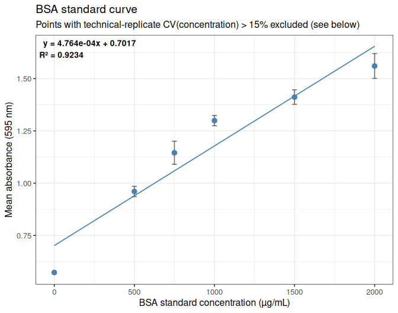
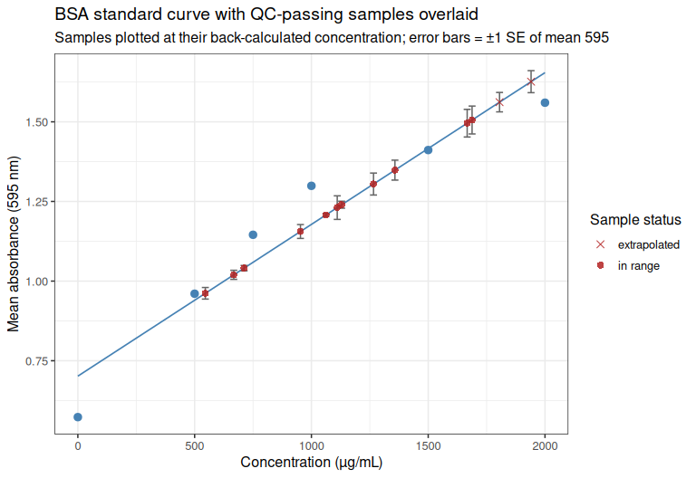
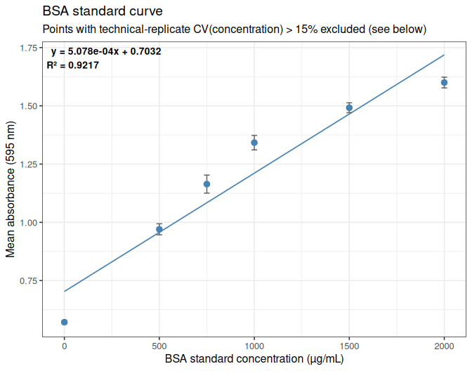
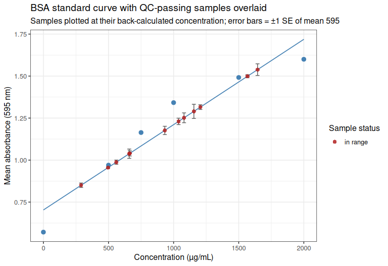
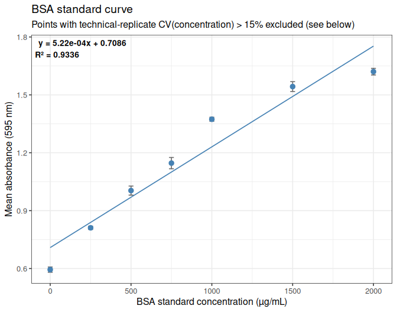
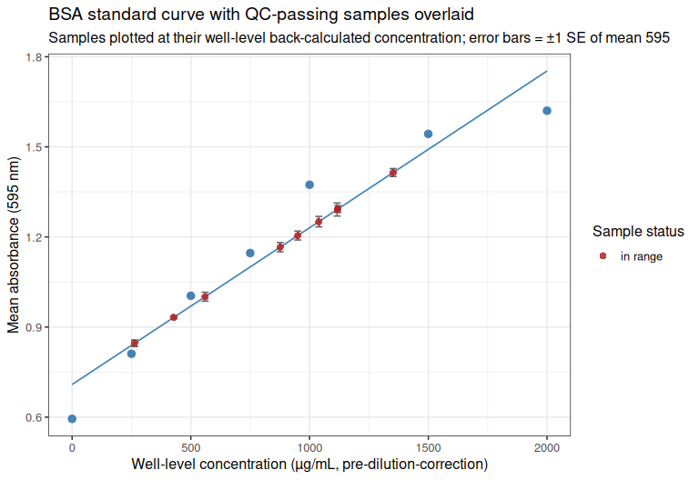

INTRO
As part of the June 2026 SORMI experiment citrate synthase assays (GitHub repo), protein quantities were needed for proper normalization of the citrate synthase assays. I quantified protein in ctenidia samples from Families 5 and 7 homozenized on 20260811 (Notebook entry) using the Quick Start Bradford Protein Assay Kit 1 (Bio-Rad; cat: 5000201).
Families 5 & 7 (Eight samples each family from each temperature treatment) were processed for protein quantification.
Due to poor replicates and/or samples falling outside of the standard curve, the BSA assay was repeated for those samples failing QC on the initial run.
MATERIALS & METHODS
BSA Assay
The Bradford Protein Assay was performed according to the manufacturer’s instructions (Bio-Rad, cat: 5000201) for microplate format. Clear, flat-bottomed 96-well plates were used for the assay.
Briefly, samples were thawed, spun at 10,000 rpm for 5 minutes, and stored on ice. A series of BSA standards were prepared and used to generate a standard curve. Samples (5uL) were then added to respective wells and 250uL of the Bradford reagent was added to each well (using a multichannel pipette; two rounds of 125uL) and mixed by pipetting. The plates were then incubated for 5 minutes at room temperature, and the absorbance was measured at 595 nm in a Synergy HTX plate reader (Agilent).
Analysis
Data was analyzed in R. Respective Rmd files are here (GitHub):
Knitted markdown from each is below.
Data files
Plate reader files
Plate reader files (*.xpt)are available here (require Gen5 software to open):
- https://github.com/RobertsLab/sormi-assay-development/tree/main/Citrate_synthase/data/BSA/plate_reader_files
Raw absorbance data
Raw absorbance data (*.csv) are available here:
- https://github.com/RobertsLab/sormi-assay-development/tree/main/Citrate_synthase/data/BSA/raw_absorbance
RESULTS
Output files with sample concentrations can be found in each of the corresponding output files from the Rmd files above (https://github.com/RobertsLab/sormi-assay-development/tree/main/Citrate_synthase/outputs) in a file named sample_concentrations.csv.
Below is a summary of the protein concentrations (ug/mL) for each sample:
| sample_name | concentration(ug/mL) |
|---|---|
| F05_01_36C | 953.1 |
| F05_01_ambient | 876.1 |
| F05_02_36C | 545.8 |
| F05_02_ambient | 1038.9 |
| F05_03_36C | 667.6 |
| F05_03_ambient | 1900.4 |
| F05_04_36C | 1062.2 |
| F05_04_ambient | 1129.4 |
| F05_05_36C | 1666.8 |
| F05_05_ambient | 711.7 |
| F05_06_36C | 1265.9 |
| F05_06_ambient | 2232.4 |
| F05_07_36C | 1110.5 |
| F05_07_ambient | 1687.8 |
| F05_08_36C | 1357.5 |
| F05_08_ambient | 2703.7 |
| F07_01_36C | 663.3 |
| F07_01_ambient | 263.1 |
| F07_02_36C | 932.4 |
| F07_02_ambient | 1080.1 |
| F07_03_36C | 1205.5 |
| F07_03_ambient | 1155.6 |
| F07_04_36C | 1567.2 |
| F07_04_ambient | 560 |
| F07_05_36C | 427.9 |
| F07_05_ambient | 659.3 |
| F07_06_36C | 496.5 |
| F07_06_ambient | 1119.4 |
| F07_07_36C | 1038.1 |
| F07_07_ambient | 1644.6 |
| F07_08_36C | 289.8 |
| F07_08_ambient | 560.2 |
FAMILY 5 ANALYSIS
1 BACKGROUND
Protein quantification (BCA/Bradford-style, 595 nm) of Magallana gigas (Pacific oyster) SoRMI plate F05, 16 samples (F05_01-F05_08, ambient and 36°C exposure) plus an 8-point BSA standard curve, each measured in triplicate wells.
The raw Gen5 export (Gen5-20260813-mgig-BSA-F05-absorbance.csv) is a per-well table where each triplicate group’s first row carries the sample/standard ID and the instrument’s own pre-computed mean/SD/CV-of-concentration, and the two replicate rows below it carry only well-level data. This document ignores the instrument’s pre-computed summary columns and recomputes mean, SD, and CV independently in R via dplyr, for both the raw absorbance (595 nm) and the concentration.
CV QC metric used for exclusion: the >15% technical-replicate CV exclusion rule (including for standard-curve points) is applied to CV of concentration (matching what the instrument’s own CV (%) column already represents for this export – verified against the raw file: e.g. SPL1’s given Mean/SD/CV of 971.656/77.065/7.931 are exactly the mean/SD/CV of its three [Concentration] values, not of its 595 values). Concentration CV is the more sensitive metric here: several groups exceed 15% on concentration while none do on raw absorbance, since back-calculation against a curve with a non-zero intercept amplifies small absorbance differences into larger relative concentration differences.
Two edge cases in the raw [Concentration] column need explicit handling:
- Censored reads. Wells reading outside the instrument’s own internal standard-curve range are reported as
<0.000or>2100.000rather than a number. These are parsed to a_censoredflag plus the boundary value, and excluded from concentration mean/SD/CV calculations (their true value is unknown, not equal to the boundary). - The zero (blank) BSA standard (
STD8) is always censored (<0.000on all three wells), by construction – a true-zero standard’s back-calculated concentration is not a meaningful quantity to compute a CV on, and this is not a data-quality problem.STD8is therefore exempt from the concentration-CV exclusion rule and is retained as the curve’s origin point on the strength of its (excellent) 595 CV instead.
Any other group left with fewer than 2 valid (non-censored) concentration replicates – e.g. SPL16 / F05_08_ambient, where 2 of 3 wells read above the top standard – has an undefined (NA) concentration CV and is treated as failing QC, consistent with the source file itself being unable to compute a CV there either (?????).
2 SETUP
2.1 Libraries
library(knitr)
library(ggplot2)
library(dplyr)##
## Attaching package: 'dplyr'
## The following objects are masked from 'package:stats':
##
## filter, lag
## The following objects are masked from 'package:base':
##
## intersect, setdiff, setequal, unionlibrary(tidyr)
knitr::opts_chunk$set(
echo = TRUE, # Display code chunks
eval = TRUE, # Evaluate code chunks
warning = FALSE, # Hide warnings
message = FALSE, # Hide messages
comment = "", # Prevents appending '##' to beginning of lines in code output
results = 'hold' # Holds output so it's all printed together after code chunk
)2.2 Set output directory
output_dir <- "../outputs/Gen5-20260813-mgig-BSA-F05"
dir.create(output_dir, showWarnings = FALSE, recursive = TRUE)3 DATA IMPORT
The raw file is a Gen5 per-well export with non-syntactic column names ([Concentration], CV (%), etc.) and a UTF-8 byte-order mark on the first header cell, so columns are renamed by position immediately after import rather than referenced by their original names.
data_path <- "../data/BSA/raw_absorbance/Gen5-20260813-mgig-BSA-F05-absorbance.csv"
protein_raw <- read.csv(data_path, stringsAsFactors = FALSE, check.names = FALSE,
na.strings = c("", "NA"))
colnames(protein_raw) <- c("well_id", "name", "well", "std_conc_known", "abs_595",
"gen5_concentration", "gen5_count", "gen5_mean",
"gen5_sd", "gen5_cv")
cat("--- protein_raw: as imported from the Gen5 export ---\n")
str(protein_raw)--- protein_raw: as imported from the Gen5 export ---
'data.frame': 72 obs. of 10 variables:
$ well_id : chr "SPL1" NA NA "SPL2" ...
$ name : chr "F05_01_36C" NA NA "F05_02_36C" ...
$ well : chr "A1" "A2" "A3" "A4" ...
$ std_conc_known : int NA NA NA NA NA NA NA NA NA NA ...
$ abs_595 : num 1.197 1.147 1.123 0.926 0.973 ...
$ gen5_concentration: chr "1056.125" "953.667" "905.177" "506.911" ...
$ gen5_count : int 3 NA NA 3 NA NA 3 NA NA 3 ...
$ gen5_mean : chr "971.656" NA NA "579.274" ...
$ gen5_sd : chr "77.065" NA NA "64.041" ...
$ gen5_cv : chr "7.931" NA NA "11.055" ...4 RESHAPING
well_id and name are only populated on the first row of each triplicate group in the raw export, so they are filled downward. Each row is also classified as a standard (well_id starts with STD) or a sample (SPL), and the instrument’s censored concentration strings (<0.000, >2100.000) are parsed into a numeric value plus a gen5_concentration_censored flag.
protein_long <- protein_raw %>%
select(well_id, name, well, std_conc_known, abs_595, gen5_concentration) %>%
fill(well_id, name, .direction = "down") %>%
mutate(
type = if_else(grepl("^STD", well_id), "standard", "sample"),
gen5_concentration_censored = grepl("^[<>]", gen5_concentration),
gen5_concentration_numeric = as.numeric(gsub("[<>]", "", gen5_concentration))
)
cat("--- protein_long: one row per well, group identifiers filled down ---\n")
str(protein_long)--- protein_long: one row per well, group identifiers filled down ---
'data.frame': 72 obs. of 9 variables:
$ well_id : chr "SPL1" "SPL1" "SPL1" "SPL2" ...
$ name : chr "F05_01_36C" "F05_01_36C" "F05_01_36C" "F05_02_36C" ...
$ well : chr "A1" "A2" "A3" "A4" ...
$ std_conc_known : int NA NA NA NA NA NA NA NA NA NA ...
$ abs_595 : num 1.197 1.147 1.123 0.926 0.973 ...
$ gen5_concentration : chr "1056.125" "953.667" "905.177" "506.911" ...
$ type : chr "sample" "sample" "sample" "sample" ...
$ gen5_concentration_censored: logi FALSE FALSE FALSE FALSE FALSE FALSE ...
$ gen5_concentration_numeric : num 1056 954 905 507 602 ...5 MEAN VALUES
5.1 Mean 595 nm absorbance
mean_595_by_group <- protein_long %>%
group_by(well_id, name, type, std_conc_known) %>%
summarise(n_wells = n(),
mean_595 = mean(abs_595),
.groups = "drop")
cat("--- mean_595_by_group ---\n")
str(mean_595_by_group)--- mean_595_by_group ---
tibble [24 × 6] (S3: tbl_df/tbl/data.frame)
$ well_id : chr [1:24] "SPL1" "SPL10" "SPL11" "SPL12" ...
$ name : chr [1:24] "F05_01_36C" "F05_02_ambient" "F05_03_ambient" "F05_04_ambient" ...
$ type : chr [1:24] "sample" "sample" "sample" "sample" ...
$ std_conc_known: int [1:24] NA NA NA NA NA NA NA NA NA NA ...
$ n_wells : int [1:24] 3 3 3 3 3 3 3 3 3 3 ...
$ mean_595 : num [1:24] 1.16 1.21 1.56 1.24 1.04 ...5.2 Mean concentration
Censored wells (reading outside the instrument’s own standard-curve range) are dropped before averaging, since their true concentration is unknown.
mean_conc_by_group <- protein_long %>%
filter(!gen5_concentration_censored) %>%
group_by(well_id, name, type, std_conc_known) %>%
summarise(n_wells_valid_conc = n(),
mean_concentration = mean(gen5_concentration_numeric),
.groups = "drop")
cat("--- mean_conc_by_group ---\n")
str(mean_conc_by_group)--- mean_conc_by_group ---
tibble [23 × 6] (S3: tbl_df/tbl/data.frame)
$ well_id : chr [1:23] "SPL1" "SPL10" "SPL11" "SPL12" ...
$ name : chr [1:23] "F05_01_36C" "F05_02_ambient" "F05_03_ambient" "F05_04_ambient" ...
$ type : chr [1:23] "sample" "sample" "sample" "sample" ...
$ std_conc_known : int [1:23] NA NA NA NA NA NA NA NA NA NA ...
$ n_wells_valid_conc: int [1:23] 3 3 3 3 3 3 3 1 3 3 ...
$ mean_concentration: num [1:23] 972 1073 1796 1143 739 ...6 STANDARD DEVIATION AND COEFFICIENT OF VARIATION
6.1 SD and CV of 595 nm absorbance
sd_cv_595_by_group <- protein_long %>%
group_by(well_id, name, type, std_conc_known) %>%
summarise(
n_wells = n(),
mean_595 = mean(abs_595),
sd_595 = sd(abs_595),
cv_595 = 100 * sd_595 / mean_595,
.groups = "drop"
)
cat("--- sd_cv_595_by_group ---\n")
str(sd_cv_595_by_group)--- sd_cv_595_by_group ---
tibble [24 × 8] (S3: tbl_df/tbl/data.frame)
$ well_id : chr [1:24] "SPL1" "SPL10" "SPL11" "SPL12" ...
$ name : chr [1:24] "F05_01_36C" "F05_02_ambient" "F05_03_ambient" "F05_04_ambient" ...
$ type : chr [1:24] "sample" "sample" "sample" "sample" ...
$ std_conc_known: int [1:24] NA NA NA NA NA NA NA NA NA NA ...
$ n_wells : int [1:24] 3 3 3 3 3 3 3 3 3 3 ...
$ mean_595 : num [1:24] 1.16 1.21 1.56 1.24 1.04 ...
$ sd_595 : num [1:24] 0.0378 0.1275 0.0528 0.0188 0.0146 ...
$ cv_595 : num [1:24] 3.27 10.58 3.38 1.52 1.4 ...6.2 SD and CV of concentration
sd_cv_conc_by_group <- protein_long %>%
filter(!gen5_concentration_censored) %>%
group_by(well_id, name, type, std_conc_known) %>%
summarise(
n_wells_valid_conc = n(),
mean_concentration = mean(gen5_concentration_numeric),
sd_concentration = sd(gen5_concentration_numeric),
cv_concentration = 100 * sd_concentration / mean_concentration,
.groups = "drop"
)
cat("--- sd_cv_conc_by_group ---\n")
str(sd_cv_conc_by_group)--- sd_cv_conc_by_group ---
tibble [23 × 8] (S3: tbl_df/tbl/data.frame)
$ well_id : chr [1:23] "SPL1" "SPL10" "SPL11" "SPL12" ...
$ name : chr [1:23] "F05_01_36C" "F05_02_ambient" "F05_03_ambient" "F05_04_ambient" ...
$ type : chr [1:23] "sample" "sample" "sample" "sample" ...
$ std_conc_known : int [1:23] NA NA NA NA NA NA NA NA NA NA ...
$ n_wells_valid_conc: int [1:23] 3 3 3 3 3 3 3 1 3 3 ...
$ mean_concentration: num [1:23] 972 1073 1796 1143 739 ...
$ sd_concentration : num [1:23] 77.1 258.7 107.8 38.2 30.1 ...
$ cv_concentration : num [1:23] 7.93 24.1 6 3.34 4.07 ...6.3 Combined per-group summary
group_stats <- sd_cv_595_by_group %>%
left_join(
sd_cv_conc_by_group %>%
select(well_id, mean_concentration, sd_concentration, cv_concentration, n_wells_valid_conc),
by = "well_id"
) %>%
arrange(type, well_id)
cat("--- group_stats: one row per sample/standard, 595- and concentration-level stats ---\n")
str(group_stats)
kable(group_stats, digits = 3)--- group_stats: one row per sample/standard, 595- and concentration-level stats ---
tibble [24 × 12] (S3: tbl_df/tbl/data.frame)
$ well_id : chr [1:24] "SPL1" "SPL10" "SPL11" "SPL12" ...
$ name : chr [1:24] "F05_01_36C" "F05_02_ambient" "F05_03_ambient" "F05_04_ambient" ...
$ type : chr [1:24] "sample" "sample" "sample" "sample" ...
$ std_conc_known : int [1:24] NA NA NA NA NA NA NA NA NA NA ...
$ n_wells : int [1:24] 3 3 3 3 3 3 3 3 3 3 ...
$ mean_595 : num [1:24] 1.16 1.21 1.56 1.24 1.04 ...
$ sd_595 : num [1:24] 0.0378 0.1275 0.0528 0.0188 0.0146 ...
$ cv_595 : num [1:24] 3.27 10.58 3.38 1.52 1.4 ...
$ mean_concentration: num [1:24] 972 1073 1796 1143 739 ...
$ sd_concentration : num [1:24] 77.1 258.7 107.8 38.2 30.1 ...
$ cv_concentration : num [1:24] 7.93 24.1 6 3.34 4.07 ...
$ n_wells_valid_conc: int [1:24] 3 3 3 3 3 3 3 1 3 3 ...| well_id | name | type | std_conc_known | n_wells | mean_595 | sd_595 | cv_595 | mean_concentration | sd_concentration | cv_concentration | n_wells_valid_conc |
|---|---|---|---|---|---|---|---|---|---|---|---|
| SPL1 | F05_01_36C | sample | NA | 3 | 1.156 | 0.038 | 3.267 | 971.656 | 77.065 | 7.931 | 3 |
| SPL10 | F05_02_ambient | sample | NA | 3 | 1.206 | 0.128 | 10.575 | 1073.167 | 258.654 | 24.102 | 3 |
| SPL11 | F05_03_ambient | sample | NA | 3 | 1.562 | 0.053 | 3.379 | 1795.714 | 107.767 | 6.001 | 3 |
| SPL12 | F05_04_ambient | sample | NA | 3 | 1.240 | 0.019 | 1.518 | 1142.757 | 38.212 | 3.344 | 3 |
| SPL13 | F05_05_ambient | sample | NA | 3 | 1.041 | 0.015 | 1.400 | 738.878 | 30.098 | 4.074 | 3 |
| SPL14 | F05_06_ambient | sample | NA | 3 | 1.626 | 0.060 | 3.684 | 1925.899 | 121.472 | 6.307 | 3 |
| SPL15 | F05_07_ambient | sample | NA | 3 | 1.506 | 0.076 | 5.036 | 1682.300 | 154.559 | 9.187 | 3 |
| SPL16 | F05_08_ambient | sample | NA | 3 | 1.719 | 0.040 | 2.336 | 2030.183 | NA | NA | 1 |
| SPL2 | F05_02_36C | sample | NA | 3 | 0.962 | 0.032 | 3.282 | 579.274 | 64.041 | 11.055 | 3 |
| SPL3 | F05_03_36C | sample | NA | 3 | 1.020 | 0.025 | 2.411 | 696.136 | 49.535 | 7.116 | 3 |
| SPL4 | F05_04_36C | sample | NA | 3 | 1.208 | 0.008 | 0.643 | 1077.834 | 15.456 | 1.434 | 3 |
| SPL5 | F05_05_36C | sample | NA | 3 | 1.496 | 0.075 | 5.025 | 1661.606 | 153.165 | 9.218 | 3 |
| SPL6 | F05_06_36C | sample | NA | 3 | 1.305 | 0.060 | 4.575 | 1274.228 | 121.807 | 9.559 | 3 |
| SPL7 | F-05_07_36C | sample | NA | 3 | 1.231 | 0.064 | 5.218 | 1123.956 | 129.443 | 11.517 | 3 |
| SPL8 | F05_08_36C | sample | NA | 3 | 1.348 | 0.054 | 4.022 | 1362.619 | 110.153 | 8.084 | 3 |
| SPL9 | F05_01_ambient | sample | NA | 3 | 1.063 | 0.067 | 6.331 | 782.972 | 136.834 | 17.476 | 3 |
| STD1 | BSA | standard | 2000 | 3 | 1.560 | 0.059 | 3.802 | 1792.265 | 120.228 | 6.708 | 3 |
| STD2 | BSA | standard | 1500 | 3 | 1.411 | 0.035 | 2.451 | 1490.640 | 69.690 | 4.675 | 3 |
| STD3 | BSA | standard | 1000 | 3 | 1.299 | 0.025 | 1.887 | 1262.866 | 49.516 | 3.921 | 3 |
| STD4 | BSA | standard | 750 | 3 | 1.145 | 0.055 | 4.809 | 951.300 | 112.197 | 11.794 | 3 |
| STD5 | BSA | standard | 500 | 3 | 0.960 | 0.025 | 2.551 | 575.554 | 49.611 | 8.620 | 3 |
| STD6 | BSA | standard | 250 | 3 | 0.768 | 0.029 | 3.794 | 185.471 | 58.758 | 31.680 | 3 |
| STD7 | BSA | standard | 125 | 3 | 0.715 | 0.010 | 1.402 | 77.197 | 21.167 | 27.419 | 3 |
| STD8 | BSA | standard | 0 | 3 | 0.573 | 0.003 | 0.524 | NA | NA | NA | NA |
7 CV-BASED EXCLUSION
Groups with CV(concentration) > 15% – or an undefined concentration CV due to insufficient valid (non-censored) replicates – are flagged and excluded from all downstream analysis, including standard-curve fitting. The zero BSA standard (STD8) is exempt from this rule (see Background) and is always retained.
group_stats <- group_stats %>%
mutate(
is_zero_standard = type == "standard" & !is.na(std_conc_known) & std_conc_known == 0,
high_cv = !is_zero_standard & (is.na(cv_concentration) | cv_concentration > 15)
)
excluded_groups <- group_stats %>% filter(high_cv)
cat("--- excluded_groups: CV(concentration) > 15% (or undefined), dropped from further analysis ---\n")
str(excluded_groups)
kable(excluded_groups %>%
select(well_id, name, type, std_conc_known, n_wells_valid_conc,
mean_concentration, sd_concentration, cv_concentration),
digits = 3)
clean_group_stats <- group_stats %>% filter(!high_cv)
cat("\nRetained after CV exclusion:", nrow(clean_group_stats), "of", nrow(group_stats), "groups\n")
str(clean_group_stats)--- excluded_groups: CV(concentration) > 15% (or undefined), dropped from further analysis ---
tibble [5 × 14] (S3: tbl_df/tbl/data.frame)
$ well_id : chr [1:5] "SPL10" "SPL16" "SPL9" "STD6" ...
$ name : chr [1:5] "F05_02_ambient" "F05_08_ambient" "F05_01_ambient" "BSA" ...
$ type : chr [1:5] "sample" "sample" "sample" "standard" ...
$ std_conc_known : int [1:5] NA NA NA 250 125
$ n_wells : int [1:5] 3 3 3 3 3
$ mean_595 : num [1:5] 1.206 1.719 1.063 0.768 0.715
$ sd_595 : num [1:5] 0.1275 0.0401 0.0673 0.0291 0.01
$ cv_595 : num [1:5] 10.58 2.34 6.33 3.79 1.4
$ mean_concentration: num [1:5] 1073.2 2030.2 783 185.5 77.2
$ sd_concentration : num [1:5] 258.7 NA 136.8 58.8 21.2
$ cv_concentration : num [1:5] 24.1 NA 17.5 31.7 27.4
$ n_wells_valid_conc: int [1:5] 3 1 3 3 3
$ is_zero_standard : logi [1:5] FALSE FALSE FALSE FALSE FALSE
$ high_cv : logi [1:5] TRUE TRUE TRUE TRUE TRUE| well_id | name | type | std_conc_known | n_wells_valid_conc | mean_concentration | sd_concentration | cv_concentration |
|---|---|---|---|---|---|---|---|
| SPL10 | F05_02_ambient | sample | NA | 3 | 1073.167 | 258.654 | 24.102 |
| SPL16 | F05_08_ambient | sample | NA | 1 | 2030.183 | NA | NA |
| SPL9 | F05_01_ambient | sample | NA | 3 | 782.972 | 136.834 | 17.476 |
| STD6 | BSA | standard | 250 | 3 | 185.471 | 58.758 | 31.680 |
| STD7 | BSA | standard | 125 | 3 | 77.197 | 21.167 | 27.419 |
Retained after CV exclusion: 19 of 24 groups
tibble [19 × 14] (S3: tbl_df/tbl/data.frame)
$ well_id : chr [1:19] "SPL1" "SPL11" "SPL12" "SPL13" ...
$ name : chr [1:19] "F05_01_36C" "F05_03_ambient" "F05_04_ambient" "F05_05_ambient" ...
$ type : chr [1:19] "sample" "sample" "sample" "sample" ...
$ std_conc_known : int [1:19] NA NA NA NA NA NA NA NA NA NA ...
$ n_wells : int [1:19] 3 3 3 3 3 3 3 3 3 3 ...
$ mean_595 : num [1:19] 1.16 1.56 1.24 1.04 1.63 ...
$ sd_595 : num [1:19] 0.0378 0.0528 0.0188 0.0146 0.0599 ...
$ cv_595 : num [1:19] 3.27 3.38 1.52 1.4 3.68 ...
$ mean_concentration: num [1:19] 972 1796 1143 739 1926 ...
$ sd_concentration : num [1:19] 77.1 107.8 38.2 30.1 121.5 ...
$ cv_concentration : num [1:19] 7.93 6 3.34 4.07 6.31 ...
$ n_wells_valid_conc: int [1:19] 3 3 3 3 3 3 3 3 3 3 ...
$ is_zero_standard : logi [1:19] FALSE FALSE FALSE FALSE FALSE FALSE ...
$ high_cv : logi [1:19] FALSE FALSE FALSE FALSE FALSE FALSE ...8 STANDARD CURVE
Fit using only the retained (CV ≤ 15%) standard points: known BSA concentration (Conc/Dil) on the x-axis, mean 595 nm absorbance on the y-axis.
standards_clean <- clean_group_stats %>% filter(type == "standard")
cat("--- standards_clean: standard points retained for curve fitting ---\n")
str(standards_clean)
standard_curve_model <- lm(mean_595 ~ std_conc_known, data = standards_clean)
curve_slope <- unname(coef(standard_curve_model)[2])
curve_intercept <- unname(coef(standard_curve_model)[1])
curve_r2 <- summary(standard_curve_model)$r.squared
cat("Standard curve fit: 595 =", format(curve_slope, digits = 6), "* concentration +",
format(curve_intercept, digits = 4), "\n")
cat("R2:", round(curve_r2, 5), "\n")--- standards_clean: standard points retained for curve fitting ---
tibble [6 × 14] (S3: tbl_df/tbl/data.frame)
$ well_id : chr [1:6] "STD1" "STD2" "STD3" "STD4" ...
$ name : chr [1:6] "BSA" "BSA" "BSA" "BSA" ...
$ type : chr [1:6] "standard" "standard" "standard" "standard" ...
$ std_conc_known : int [1:6] 2000 1500 1000 750 500 0
$ n_wells : int [1:6] 3 3 3 3 3 3
$ mean_595 : num [1:6] 1.56 1.41 1.3 1.15 0.96 ...
$ sd_595 : num [1:6] 0.0593 0.0346 0.0245 0.0551 0.0245 ...
$ cv_595 : num [1:6] 3.8 2.45 1.89 4.81 2.55 ...
$ mean_concentration: num [1:6] 1792 1491 1263 951 576 ...
$ sd_concentration : num [1:6] 120.2 69.7 49.5 112.2 49.6 ...
$ cv_concentration : num [1:6] 6.71 4.68 3.92 11.79 8.62 ...
$ n_wells_valid_conc: int [1:6] 3 3 3 3 3 NA
$ is_zero_standard : logi [1:6] FALSE FALSE FALSE FALSE FALSE TRUE
$ high_cv : logi [1:6] FALSE FALSE FALSE FALSE FALSE FALSE
Standard curve fit: 595 = 0.000476359 * concentration + 0.7017
R2: 0.92345 8.1 Plot standard curve
eq_label <- paste0("y = ", format(curve_slope, digits = 4, scientific = TRUE), "x + ",
sprintf("%.4f", curve_intercept),
"\nR² = ", sprintf("%.4f", curve_r2))
standard_curve_plot <- ggplot(standards_clean, aes(x = std_conc_known, y = mean_595)) +
geom_smooth(method = "lm", formula = y ~ x, se = FALSE, color = "steelblue", linewidth = 0.6) +
geom_errorbar(aes(ymin = mean_595 - sd_595, ymax = mean_595 + sd_595),
width = 30, color = "grey40") +
geom_point(size = 2.6, color = "steelblue") +
annotate("text", x = -Inf, y = Inf, label = eq_label,
hjust = -0.08, vjust = 1.3, size = 3.6, fontface = "bold") +
labs(x = "BSA standard concentration (µg/mL)",
y = "Mean absorbance (595 nm)",
title = "BSA standard curve",
subtitle = "Points with technical-replicate CV(concentration) > 15% excluded (see below)") +
theme_bw(base_size = 12)
print(standard_curve_plot)
ggsave(file.path(output_dir, "standard_curve_595.png"), standard_curve_plot,
width = 7, height = 5.5, dpi = 300)Standard points excluded from the curve:
excluded_standards <- group_stats %>% filter(type == "standard", high_cv)
cat("--- excluded_standards ---\n")
str(excluded_standards)
kable(excluded_standards %>%
select(well_id, std_conc_known, mean_concentration, sd_concentration, cv_concentration),
digits = 3)--- excluded_standards ---
tibble [2 × 14] (S3: tbl_df/tbl/data.frame)
$ well_id : chr [1:2] "STD6" "STD7"
$ name : chr [1:2] "BSA" "BSA"
$ type : chr [1:2] "standard" "standard"
$ std_conc_known : int [1:2] 250 125
$ n_wells : int [1:2] 3 3
$ mean_595 : num [1:2] 0.768 0.715
$ sd_595 : num [1:2] 0.0291 0.01
$ cv_595 : num [1:2] 3.79 1.4
$ mean_concentration: num [1:2] 185.5 77.2
$ sd_concentration : num [1:2] 58.8 21.2
$ cv_concentration : num [1:2] 31.7 27.4
$ n_wells_valid_conc: int [1:2] 3 3
$ is_zero_standard : logi [1:2] FALSE FALSE
$ high_cv : logi [1:2] TRUE TRUE| well_id | std_conc_known | mean_concentration | sd_concentration | cv_concentration |
|---|---|---|---|---|
| STD6 | 250 | 185.471 | 58.758 | 31.680 |
| STD7 | 125 | 77.197 | 21.167 | 27.419 |
9 APPLYING THE STANDARD CURVE TO SAMPLES
Samples that passed CV QC are back-calculated against the fitted curve. Samples whose mean 595 falls outside the retained standards’ absorbance range are flagged as extrapolated (e.g. F05_08_ambient read above the top standard on 2 of its 3 wells and was excluded above on CV grounds already, since only 1 of its wells had a defined, non-censored concentration).
samples_clean <- clean_group_stats %>%
filter(type == "sample") %>%
mutate(
se_595 = sd_595 / sqrt(n_wells),
calculated_concentration = (mean_595 - curve_intercept) / curve_slope,
in_curve_range = mean_595 >= min(standards_clean$mean_595) &
mean_595 <= max(standards_clean$mean_595)
) %>%
arrange(name)
cat("--- samples_clean: CV-QC-passing samples, quantified against the fitted standard curve ---\n")
str(samples_clean)--- samples_clean: CV-QC-passing samples, quantified against the fitted standard curve ---
tibble [13 × 17] (S3: tbl_df/tbl/data.frame)
$ well_id : chr [1:13] "SPL7" "SPL1" "SPL2" "SPL3" ...
$ name : chr [1:13] "F-05_07_36C" "F05_01_36C" "F05_02_36C" "F05_03_36C" ...
$ type : chr [1:13] "sample" "sample" "sample" "sample" ...
$ std_conc_known : int [1:13] NA NA NA NA NA NA NA NA NA NA ...
$ n_wells : int [1:13] 3 3 3 3 3 3 3 3 3 3 ...
$ mean_595 : num [1:13] 1.231 1.156 0.962 1.02 1.562 ...
$ sd_595 : num [1:13] 0.0642 0.0378 0.0316 0.0246 0.0528 ...
$ cv_595 : num [1:13] 5.22 3.27 3.28 2.41 3.38 ...
$ mean_concentration : num [1:13] 1124 972 579 696 1796 ...
$ sd_concentration : num [1:13] 129.4 77.1 64 49.5 107.8 ...
$ cv_concentration : num [1:13] 11.52 7.93 11.06 7.12 6 ...
$ n_wells_valid_conc : int [1:13] 3 3 3 3 3 3 3 3 3 3 ...
$ is_zero_standard : logi [1:13] FALSE FALSE FALSE FALSE FALSE FALSE ...
$ high_cv : logi [1:13] FALSE FALSE FALSE FALSE FALSE FALSE ...
$ se_595 : num [1:13] 0.0371 0.0218 0.0182 0.0142 0.0305 ...
$ calculated_concentration: num [1:13] 1111 953 546 668 1805 ...
$ in_curve_range : logi [1:13] TRUE TRUE TRUE TRUE FALSE TRUE ...cat("Samples with absorbance outside the retained standard curve's range (extrapolated):\n")
kable(samples_clean %>% filter(!in_curve_range) %>%
select(well_id, name, mean_595, calculated_concentration),
digits = 3)Samples with absorbance outside the retained standard curve's range (extrapolated):| well_id | name | mean_595 | calculated_concentration |
|---|---|---|---|
| SPL11 | F05_03_ambient | 1.562 | 1805.383 |
| SPL14 | F05_06_ambient | 1.626 | 1940.435 |
9.1 Plot samples on standard curve
Every QC-passing sample is plotted at its own mean 595 and back-calculated concentration, with vertical error bars of ±1 standard error (of mean 595, across its 2-3 retained technical replicates), overlaid on the standard curve fit line and retained standard points.
samples_on_curve_plot <- ggplot() +
geom_smooth(data = standards_clean, aes(x = std_conc_known, y = mean_595),
method = "lm", formula = y ~ x, se = FALSE,
color = "steelblue", linewidth = 0.6) +
geom_point(data = standards_clean, aes(x = std_conc_known, y = mean_595),
size = 2.6, color = "steelblue") +
geom_errorbar(data = samples_clean,
aes(x = calculated_concentration,
ymin = mean_595 - se_595, ymax = mean_595 + se_595),
width = 30, color = "grey40") +
geom_point(data = samples_clean,
aes(x = calculated_concentration, y = mean_595, shape = in_curve_range),
size = 2.4, color = "firebrick", alpha = 0.85) +
scale_shape_manual(values = c(`TRUE` = 16, `FALSE` = 4),
labels = c(`TRUE` = "in range", `FALSE` = "extrapolated"),
name = "Sample status") +
labs(x = "Concentration (µg/mL)",
y = "Mean absorbance (595 nm)",
title = "BSA standard curve with QC-passing samples overlaid",
subtitle = "Samples plotted at their back-calculated concentration; error bars = ±1 SE of mean 595") +
theme_bw(base_size = 12)
print(samples_on_curve_plot)
ggsave(file.path(output_dir, "standard_curve_with_samples.png"), samples_on_curve_plot,
width = 8, height = 5.5, dpi = 300)10 RESULTS TABLE
results_table <- samples_clean %>%
transmute(
Sample = name,
`Well ID` = well_id,
`Mean 595` = round(mean_595, 3),
`CV 595 (%)` = round(cv_595, 2),
`CV concentration (%)` = round(cv_concentration, 2),
`Calculated concentration (ug/mL)` = round(calculated_concentration, 1),
`In standard curve range` = ifelse(in_curve_range, "yes", "NO - extrapolated")
) %>%
arrange(gsub("[0-9]+$", "", `Well ID`), as.numeric(gsub("^[A-Za-z]+", "", `Well ID`)))
kable(results_table)| Sample | Well ID | Mean 595 | CV 595 (%) | CV concentration (%) | Calculated concentration (ug/mL) | In standard curve range |
|---|---|---|---|---|---|---|
| F05_01_36C | SPL1 | 1.156 | 3.27 | 7.93 | 953.1 | yes |
| F05_02_36C | SPL2 | 0.962 | 3.28 | 11.06 | 545.8 | yes |
| F05_03_36C | SPL3 | 1.020 | 2.41 | 7.12 | 667.6 | yes |
| F05_04_36C | SPL4 | 1.208 | 0.64 | 1.43 | 1062.2 | yes |
| F05_05_36C | SPL5 | 1.496 | 5.03 | 9.22 | 1666.8 | yes |
| F05_06_36C | SPL6 | 1.305 | 4.57 | 9.56 | 1265.9 | yes |
| F-05_07_36C | SPL7 | 1.231 | 5.22 | 11.52 | 1110.5 | yes |
| F05_08_36C | SPL8 | 1.348 | 4.02 | 8.08 | 1357.5 | yes |
| F05_03_ambient | SPL11 | 1.562 | 3.38 | 6.00 | 1805.4 | NO - extrapolated |
| F05_04_ambient | SPL12 | 1.240 | 1.52 | 3.34 | 1129.4 | yes |
| F05_05_ambient | SPL13 | 1.041 | 1.40 | 4.07 | 711.7 | yes |
| F05_06_ambient | SPL14 | 1.626 | 3.68 | 6.31 | 1940.4 | NO - extrapolated |
| F05_07_ambient | SPL15 | 1.506 | 5.04 | 9.19 | 1687.8 | yes |
Only samples passing all QC – CV ≤ 15% and within the retained standard curve’s range (i.e. not extrapolated) – are written to the CSV output.
results_table_export <- results_table %>% filter(`In standard curve range` == "yes")
cat("--- results_table_export: samples passing all QC (CV and in-range), written to CSV ---\n")
str(results_table_export)
write.csv(results_table_export, file.path(output_dir, "sample_protein_concentrations.csv"), row.names = FALSE)--- results_table_export: samples passing all QC (CV and in-range), written to CSV ---
tibble [11 × 7] (S3: tbl_df/tbl/data.frame)
$ Sample : chr [1:11] "F05_01_36C" "F05_02_36C" "F05_03_36C" "F05_04_36C" ...
$ Well ID : chr [1:11] "SPL1" "SPL2" "SPL3" "SPL4" ...
$ Mean 595 : num [1:11] 1.156 0.962 1.02 1.208 1.496 ...
$ CV 595 (%) : num [1:11] 3.27 3.28 2.41 0.64 5.03 4.57 5.22 4.02 1.52 1.4 ...
$ CV concentration (%) : num [1:11] 7.93 11.06 7.12 1.43 9.22 ...
$ Calculated concentration (ug/mL): num [1:11] 953 546 668 1062 1667 ...
$ In standard curve range : chr [1:11] "yes" "yes" "yes" "yes" ...11 SUMMARY
- 24 sample/standard triplicate groups were imported (8 BSA standards, 16 samples).
- 5 group(s) exceeded 15% technical-replicate CV(concentration), or had an undefined CV from insufficient valid replicates, and were excluded from all downstream analysis: SPL10 (F05_02_ambient), SPL16 (F05_08_ambient), SPL9 (F05_01_ambient), STD6 (BSA), STD7 (BSA).
- The BSA standard curve was fit on the 6 remaining standard points: slope = 0.0004764, intercept = 0.7017, R² = 0.9234.
- 2 CV-QC-passing sample(s) fell outside the retained standard curve’s absorbance range and are flagged as extrapolated in the results table above.
11.1 Samples passing QC
Sample names are sorted naturally (e.g. F05_02_ambient before F05_10_ambient, and ignoring stray punctuation like the F-05_07_36C typo) rather than by plain lexicographic string order.
natural_sort_key <- function(x) gsub("[^A-Za-z0-9]", "", x)passing_samples_table <- samples_clean %>%
transmute(sample_name = name,
`concentration(ug/mL)` = round(calculated_concentration, 1)) %>%
arrange(natural_sort_key(sample_name))
cat("--- passing_samples_table: samples passing CV QC, name + calculated concentration ---\n")
str(passing_samples_table)
kable(passing_samples_table)--- passing_samples_table: samples passing CV QC, name + calculated concentration ---
tibble [13 × 2] (S3: tbl_df/tbl/data.frame)
$ sample_name : chr [1:13] "F05_01_36C" "F05_02_36C" "F05_03_36C" "F05_03_ambient" ...
$ concentration(ug/mL): num [1:13] 953 546 668 1805 1062 ...| sample_name | concentration(ug/mL) |
|---|---|
| F05_01_36C | 953.1 |
| F05_02_36C | 545.8 |
| F05_03_36C | 667.6 |
| F05_03_ambient | 1805.4 |
| F05_04_36C | 1062.2 |
| F05_04_ambient | 1129.4 |
| F05_05_36C | 1666.8 |
| F05_05_ambient | 711.7 |
| F05_06_36C | 1265.9 |
| F05_06_ambient | 1940.4 |
| F-05_07_36C | 1110.5 |
| F05_07_ambient | 1687.8 |
| F05_08_36C | 1357.5 |
11.2 Samples recommended for re-assay
failed_qc_samples <- excluded_groups %>% filter(type == "sample") %>% arrange(name)
extrapolated_samples <- samples_clean %>% filter(!in_curve_range) %>% arrange(name)
cat("--- failed_qc_samples: samples excluded from analysis on CV grounds ---\n")
str(failed_qc_samples)
cat("\n--- extrapolated_samples: QC-passing samples outside the retained standard curve's range ---\n")
str(extrapolated_samples)--- failed_qc_samples: samples excluded from analysis on CV grounds ---
tibble [3 × 14] (S3: tbl_df/tbl/data.frame)
$ well_id : chr [1:3] "SPL9" "SPL10" "SPL16"
$ name : chr [1:3] "F05_01_ambient" "F05_02_ambient" "F05_08_ambient"
$ type : chr [1:3] "sample" "sample" "sample"
$ std_conc_known : int [1:3] NA NA NA
$ n_wells : int [1:3] 3 3 3
$ mean_595 : num [1:3] 1.06 1.21 1.72
$ sd_595 : num [1:3] 0.0673 0.1275 0.0401
$ cv_595 : num [1:3] 6.33 10.58 2.34
$ mean_concentration: num [1:3] 783 1073 2030
$ sd_concentration : num [1:3] 137 259 NA
$ cv_concentration : num [1:3] 17.5 24.1 NA
$ n_wells_valid_conc: int [1:3] 3 3 1
$ is_zero_standard : logi [1:3] FALSE FALSE FALSE
$ high_cv : logi [1:3] TRUE TRUE TRUE
--- extrapolated_samples: QC-passing samples outside the retained standard curve's range ---
tibble [2 × 17] (S3: tbl_df/tbl/data.frame)
$ well_id : chr [1:2] "SPL11" "SPL14"
$ name : chr [1:2] "F05_03_ambient" "F05_06_ambient"
$ type : chr [1:2] "sample" "sample"
$ std_conc_known : int [1:2] NA NA
$ n_wells : int [1:2] 3 3
$ mean_595 : num [1:2] 1.56 1.63
$ sd_595 : num [1:2] 0.0528 0.0599
$ cv_595 : num [1:2] 3.38 3.68
$ mean_concentration : num [1:2] 1796 1926
$ sd_concentration : num [1:2] 108 121
$ cv_concentration : num [1:2] 6 6.31
$ n_wells_valid_conc : int [1:2] 3 3
$ is_zero_standard : logi [1:2] FALSE FALSE
$ high_cv : logi [1:2] FALSE FALSE
$ se_595 : num [1:2] 0.0305 0.0346
$ calculated_concentration: num [1:2] 1805 1940
$ in_curve_range : logi [1:2] FALSE FALSEreassay_candidates <- bind_rows(
failed_qc_samples %>%
transmute(`Sample name` = name,
`Rationale for re-assay` = as.character(ifelse(
is.na(cv_concentration),
"CV undefined (< 2 valid replicates)",
"CV > 15%"
))),
extrapolated_samples %>%
transmute(`Sample name` = name,
`Rationale for re-assay` = "outside standard curve range")
) %>%
arrange(natural_sort_key(`Sample name`))
cat("--- reassay_candidates: all samples flagged for re-assay, with rationale ---\n")
str(reassay_candidates)
kable(reassay_candidates)--- reassay_candidates: all samples flagged for re-assay, with rationale ---
tibble [5 × 2] (S3: tbl_df/tbl/data.frame)
$ Sample name : chr [1:5] "F05_01_ambient" "F05_02_ambient" "F05_03_ambient" "F05_06_ambient" ...
$ Rationale for re-assay: chr [1:5] "CV > 15%" "CV > 15%" "outside standard curve range" "outside standard curve range" ...| Sample name | Rationale for re-assay |
|---|---|
| F05_01_ambient | CV > 15% |
| F05_02_ambient | CV > 15% |
| F05_03_ambient | outside standard curve range |
| F05_06_ambient | outside standard curve range |
| F05_08_ambient | CV undefined (< 2 valid replicates) |
FAMILY 7 ANALYSIS
1 BACKGROUND
Protein quantification (BCA/Bradford-style, 595 nm) of Magallana gigas (Pacific oyster) SoRMI plate F07, 16 samples (F07_01-F07_08, ambient and 36°C exposure) plus an 8-point BSA standard curve, each measured in triplicate wells.
The raw Gen5 export (Gen5-20260813-mgig-BSA-F07-absorbance.csv) is a per-well table where each triplicate group’s first row carries the sample/standard ID and the instrument’s own pre-computed mean/SD/CV-of-concentration, and the two replicate rows below it carry only well-level data. This document ignores the instrument’s pre-computed summary columns and recomputes mean, SD, and CV independently in R via dplyr, for both the raw absorbance (595 nm) and the concentration.
CV QC metric used for exclusion: the >15% technical-replicate CV exclusion rule (including for standard-curve points) is applied to CV of concentration (matching what the instrument’s own CV (%) column already represents for this export – verified against the raw file: e.g. SPL1’s given Mean/SD/CV of 694.467/49.577/7.139 are exactly the mean/SD/CV of its three [Concentration] values, not of its 595 values). Concentration CV is the more sensitive metric here: several groups exceed 15% on concentration while none do on raw absorbance, since back-calculation against a curve with a non-zero intercept amplifies small absorbance differences into larger relative concentration differences.
Two edge cases in the raw [Concentration] column need explicit handling:
- Censored reads. Wells reading outside the instrument’s own internal standard-curve range are reported as
<0.000or>2100.000rather than a number. These are parsed to a_censoredflag plus the boundary value, and excluded from concentration mean/SD/CV calculations (their true value is unknown, not equal to the boundary). - The zero (blank) BSA standard (
STD8) is always censored (<0.000on all three wells), by construction – a true-zero standard’s back-calculated concentration is not a meaningful quantity to compute a CV on, and this is not a data-quality problem.STD8is therefore exempt from the concentration-CV exclusion rule and is retained as the curve’s origin point on the strength of its (excellent) 595 CV instead.
Any other group left with fewer than 2 valid (non-censored) concentration replicates has an undefined (NA) concentration CV and is treated as failing QC, consistent with the source file itself being unable to compute a CV there either (?????). In this plate’s data, every sample well yields a numeric (non-censored) concentration, so this case only arises for the zero BSA standard (which is exempted, above).
2 SETUP
2.1 Libraries
library(knitr)
library(ggplot2)
library(dplyr)##
## Attaching package: 'dplyr'
## The following objects are masked from 'package:stats':
##
## filter, lag
## The following objects are masked from 'package:base':
##
## intersect, setdiff, setequal, unionlibrary(tidyr)
knitr::opts_chunk$set(
echo = TRUE, # Display code chunks
eval = TRUE, # Evaluate code chunks
warning = FALSE, # Hide warnings
message = FALSE, # Hide messages
comment = "", # Prevents appending '##' to beginning of lines in code output
results = 'hold' # Holds output so it's all printed together after code chunk
)2.2 Set output directory
output_dir <- "../outputs/Gen5-20260813-mgig-BSA-F07"
dir.create(output_dir, showWarnings = FALSE, recursive = TRUE)3 DATA IMPORT
The raw file is a Gen5 per-well export with non-syntactic column names ([Concentration], CV (%), etc.) and a UTF-8 byte-order mark on the first header cell, so columns are renamed by position immediately after import rather than referenced by their original names.
data_path <- "../data/BSA/raw_absorbance/Gen5-20260813-mgig-BSA-F07-absorbance.csv"
protein_raw <- read.csv(data_path, stringsAsFactors = FALSE, check.names = FALSE,
na.strings = c("", "NA"))
colnames(protein_raw) <- c("well_id", "name", "well", "std_conc_known", "abs_595",
"gen5_concentration", "gen5_count", "gen5_mean",
"gen5_sd", "gen5_cv")
cat("--- protein_raw: as imported from the Gen5 export ---\n")
str(protein_raw)--- protein_raw: as imported from the Gen5 export ---
'data.frame': 72 obs. of 10 variables:
$ well_id : chr "SPL1" NA NA "SPL2" ...
$ name : chr "F07_01_36C" NA NA "F07_02_36C" ...
$ well : chr "A1" "A2" "A3" "A4" ...
$ std_conc_known : int NA NA NA NA NA NA NA NA NA NA ...
$ abs_595 : num 1.01 1.04 1.07 1.15 1.15 ...
$ gen5_concentration: chr "645.965" "692.383" "745.053" "909.883" ...
$ gen5_count : int 3 NA NA 3 NA NA 3 NA NA 3 ...
$ gen5_mean : chr "694.467" NA NA "953.017" ...
$ gen5_sd : chr "49.577" NA NA "81.025" ...
$ gen5_cv : chr "7.139" NA NA "8.502" ...4 RESHAPING
well_id and name are only populated on the first row of each triplicate group in the raw export, so they are filled downward. Each row is also classified as a standard (well_id starts with STD) or a sample (SPL), and the instrument’s censored concentration strings (<0.000, >2100.000) are parsed into a numeric value plus a gen5_concentration_censored flag.
protein_long <- protein_raw %>%
select(well_id, name, well, std_conc_known, abs_595, gen5_concentration) %>%
fill(well_id, name, .direction = "down") %>%
mutate(
type = if_else(grepl("^STD", well_id), "standard", "sample"),
gen5_concentration_censored = grepl("^[<>]", gen5_concentration),
gen5_concentration_numeric = as.numeric(gsub("[<>]", "", gen5_concentration))
)
cat("--- protein_long: one row per well, group identifiers filled down ---\n")
str(protein_long)--- protein_long: one row per well, group identifiers filled down ---
'data.frame': 72 obs. of 9 variables:
$ well_id : chr "SPL1" "SPL1" "SPL1" "SPL2" ...
$ name : chr "F07_01_36C" "F07_01_36C" "F07_01_36C" "F07_02_36C" ...
$ well : chr "A1" "A2" "A3" "A4" ...
$ std_conc_known : int NA NA NA NA NA NA NA NA NA NA ...
$ abs_595 : num 1.01 1.04 1.07 1.15 1.15 ...
$ gen5_concentration : chr "645.965" "692.383" "745.053" "909.883" ...
$ type : chr "sample" "sample" "sample" "sample" ...
$ gen5_concentration_censored: logi FALSE FALSE FALSE FALSE FALSE FALSE ...
$ gen5_concentration_numeric : num 646 692 745 910 903 ...5 MEAN VALUES
5.1 Mean 595 nm absorbance
mean_595_by_group <- protein_long %>%
group_by(well_id, name, type, std_conc_known) %>%
summarise(n_wells = n(),
mean_595 = mean(abs_595),
.groups = "drop")
cat("--- mean_595_by_group ---\n")
str(mean_595_by_group)--- mean_595_by_group ---
tibble [24 × 6] (S3: tbl_df/tbl/data.frame)
$ well_id : chr [1:24] "SPL1" "SPL10" "SPL11" "SPL12" ...
$ name : chr [1:24] "F07_01_36C" "F07_02_ambient" "F07_03_ambient" "F07_04_ambient" ...
$ type : chr [1:24] "sample" "sample" "sample" "sample" ...
$ std_conc_known: int [1:24] NA NA NA NA NA NA NA NA NA NA ...
$ n_wells : int [1:24] 3 3 3 3 3 3 3 3 3 3 ...
$ mean_595 : num [1:24] 1.04 1.25 1.29 1.02 1.04 ...5.2 Mean concentration
Censored wells (reading outside the instrument’s own standard-curve range) are dropped before averaging, since their true concentration is unknown.
mean_conc_by_group <- protein_long %>%
filter(!gen5_concentration_censored) %>%
group_by(well_id, name, type, std_conc_known) %>%
summarise(n_wells_valid_conc = n(),
mean_concentration = mean(gen5_concentration_numeric),
.groups = "drop")
cat("--- mean_conc_by_group ---\n")
str(mean_conc_by_group)--- mean_conc_by_group ---
tibble [23 × 6] (S3: tbl_df/tbl/data.frame)
$ well_id : chr [1:23] "SPL1" "SPL10" "SPL11" "SPL12" ...
$ name : chr [1:23] "F07_01_36C" "F07_02_ambient" "F07_03_ambient" "F07_04_ambient" ...
$ type : chr [1:23] "sample" "sample" "sample" "sample" ...
$ std_conc_known : int [1:23] NA NA NA NA NA NA NA NA NA NA ...
$ n_wells_valid_conc: int [1:23] 3 3 3 3 3 3 3 3 3 3 ...
$ mean_concentration: num [1:23] 694 1096 1168 652 691 ...6 STANDARD DEVIATION AND COEFFICIENT OF VARIATION
6.1 SD and CV of 595 nm absorbance
sd_cv_595_by_group <- protein_long %>%
group_by(well_id, name, type, std_conc_known) %>%
summarise(
n_wells = n(),
mean_595 = mean(abs_595),
sd_595 = sd(abs_595),
cv_595 = 100 * sd_595 / mean_595,
.groups = "drop"
)
cat("--- sd_cv_595_by_group ---\n")
str(sd_cv_595_by_group)--- sd_cv_595_by_group ---
tibble [24 × 8] (S3: tbl_df/tbl/data.frame)
$ well_id : chr [1:24] "SPL1" "SPL10" "SPL11" "SPL12" ...
$ name : chr [1:24] "F07_01_36C" "F07_02_ambient" "F07_03_ambient" "F07_04_ambient" ...
$ type : chr [1:24] "sample" "sample" "sample" "sample" ...
$ std_conc_known: int [1:24] NA NA NA NA NA NA NA NA NA NA ...
$ n_wells : int [1:24] 3 3 3 3 3 3 3 3 3 3 ...
$ mean_595 : num [1:24] 1.04 1.25 1.29 1.02 1.04 ...
$ sd_595 : num [1:24] 0.0265 0.0505 0.073 0.0835 0.0481 ...
$ cv_595 : num [1:24] 2.55 4.03 5.66 8.2 4.64 ...6.2 SD and CV of concentration
sd_cv_conc_by_group <- protein_long %>%
filter(!gen5_concentration_censored) %>%
group_by(well_id, name, type, std_conc_known) %>%
summarise(
n_wells_valid_conc = n(),
mean_concentration = mean(gen5_concentration_numeric),
sd_concentration = sd(gen5_concentration_numeric),
cv_concentration = 100 * sd_concentration / mean_concentration,
.groups = "drop"
)
cat("--- sd_cv_conc_by_group ---\n")
str(sd_cv_conc_by_group)--- sd_cv_conc_by_group ---
tibble [23 × 8] (S3: tbl_df/tbl/data.frame)
$ well_id : chr [1:23] "SPL1" "SPL10" "SPL11" "SPL12" ...
$ name : chr [1:23] "F07_01_36C" "F07_02_ambient" "F07_03_ambient" "F07_04_ambient" ...
$ type : chr [1:23] "sample" "sample" "sample" "sample" ...
$ std_conc_known : int [1:23] NA NA NA NA NA NA NA NA NA NA ...
$ n_wells_valid_conc: int [1:23] 3 3 3 3 3 3 3 3 3 3 ...
$ mean_concentration: num [1:23] 694 1096 1168 652 691 ...
$ sd_concentration : num [1:23] 49.6 95.8 138.6 157.5 91.5 ...
$ cv_concentration : num [1:23] 7.14 8.74 11.87 24.15 13.24 ...6.3 Combined per-group summary
group_stats <- sd_cv_595_by_group %>%
left_join(
sd_cv_conc_by_group %>%
select(well_id, mean_concentration, sd_concentration, cv_concentration, n_wells_valid_conc),
by = "well_id"
) %>%
arrange(type, well_id)
cat("--- group_stats: one row per sample/standard, 595- and concentration-level stats ---\n")
str(group_stats)
kable(group_stats, digits = 3)--- group_stats: one row per sample/standard, 595- and concentration-level stats ---
tibble [24 × 12] (S3: tbl_df/tbl/data.frame)
$ well_id : chr [1:24] "SPL1" "SPL10" "SPL11" "SPL12" ...
$ name : chr [1:24] "F07_01_36C" "F07_02_ambient" "F07_03_ambient" "F07_04_ambient" ...
$ type : chr [1:24] "sample" "sample" "sample" "sample" ...
$ std_conc_known : int [1:24] NA NA NA NA NA NA NA NA NA NA ...
$ n_wells : int [1:24] 3 3 3 3 3 3 3 3 3 3 ...
$ mean_595 : num [1:24] 1.04 1.25 1.29 1.02 1.04 ...
$ sd_595 : num [1:24] 0.0265 0.0505 0.073 0.0835 0.0481 ...
$ cv_595 : num [1:24] 2.55 4.03 5.66 8.2 4.64 ...
$ mean_concentration: num [1:24] 694 1096 1168 652 691 ...
$ sd_concentration : num [1:24] 49.6 95.8 138.6 157.5 91.5 ...
$ cv_concentration : num [1:24] 7.14 8.74 11.87 24.15 13.24 ...
$ n_wells_valid_conc: int [1:24] 3 3 3 3 3 3 3 3 3 3 ...| well_id | name | type | std_conc_known | n_wells | mean_595 | sd_595 | cv_595 | mean_concentration | sd_concentration | cv_concentration | n_wells_valid_conc |
|---|---|---|---|---|---|---|---|---|---|---|---|
| SPL1 | F07_01_36C | sample | NA | 3 | 1.040 | 0.027 | 2.549 | 694.467 | 49.577 | 7.139 | 3 |
| SPL10 | F07_02_ambient | sample | NA | 3 | 1.252 | 0.051 | 4.035 | 1095.807 | 95.759 | 8.739 | 3 |
| SPL11 | F07_03_ambient | sample | NA | 3 | 1.290 | 0.073 | 5.658 | 1168.307 | 138.620 | 11.865 | 3 |
| SPL12 | F07_04_ambient | sample | NA | 3 | 1.018 | 0.083 | 8.203 | 652.091 | 157.509 | 24.154 | 3 |
| SPL13 | F07_05_ambient | sample | NA | 3 | 1.038 | 0.048 | 4.637 | 690.741 | 91.456 | 13.240 | 3 |
| SPL14 | F07_06_ambient | sample | NA | 3 | 1.296 | 0.099 | 7.647 | 1178.349 | 187.114 | 15.879 | 3 |
| SPL15 | F07_07_ambient | sample | NA | 3 | 1.538 | 0.060 | 3.922 | 1638.927 | 114.400 | 6.980 | 3 |
| SPL16 | F07_08_ambient | sample | NA | 3 | 0.988 | 0.022 | 2.184 | 595.253 | 41.154 | 6.914 | 3 |
| SPL2 | F07_02_36C | sample | NA | 3 | 1.177 | 0.043 | 3.635 | 953.017 | 81.025 | 8.502 | 3 |
| SPL3 | F07_03_36C | sample | NA | 3 | 1.315 | 0.024 | 1.841 | 1216.746 | 46.107 | 3.789 | 3 |
| SPL4 | F07_04_36C | sample | NA | 3 | 1.499 | 0.016 | 1.048 | 1564.027 | 29.665 | 1.897 | 3 |
| SPL5 | F07_05_36C | sample | NA | 3 | 0.878 | 0.031 | 3.585 | 388.299 | 59.694 | 15.373 | 3 |
| SPL6 | F07_06_36C | sample | NA | 3 | 0.955 | 0.008 | 0.813 | 533.741 | 14.556 | 2.727 | 3 |
| SPL7 | F07_07_36C | sample | NA | 3 | 1.230 | 0.033 | 2.689 | 1054.821 | 63.068 | 5.979 | 3 |
| SPL8 | F07_08_36C | sample | NA | 3 | 0.850 | 0.023 | 2.675 | 334.997 | 42.754 | 12.762 | 3 |
| SPL9 | F07_01_ambient | sample | NA | 3 | 0.805 | 0.059 | 7.285 | 249.551 | 110.645 | 44.338 | 3 |
| STD1 | BSA | standard | 2000 | 3 | 1.600 | 0.023 | 1.442 | 1755.192 | 43.330 | 2.469 | 3 |
| STD2 | BSA | standard | 1500 | 3 | 1.492 | 0.021 | 1.423 | 1549.754 | 40.397 | 2.607 | 3 |
| STD3 | BSA | standard | 1000 | 3 | 1.342 | 0.031 | 2.328 | 1266.321 | 59.723 | 4.716 | 3 |
| STD4 | BSA | standard | 750 | 3 | 1.164 | 0.039 | 3.324 | 930.092 | 73.726 | 7.927 | 3 |
| STD5 | BSA | standard | 500 | 3 | 0.970 | 0.024 | 2.455 | 561.213 | 44.720 | 7.968 | 3 |
| STD6 | BSA | standard | 250 | 3 | 0.796 | 0.030 | 3.726 | 232.689 | 55.661 | 23.921 | 3 |
| STD7 | BSA | standard | 125 | 3 | 0.686 | 0.016 | 2.314 | 23.525 | 29.610 | 125.869 | 3 |
| STD8 | BSA | standard | 0 | 3 | 0.571 | 0.007 | 1.165 | NA | NA | NA | NA |
7 CV-BASED EXCLUSION
Groups with CV(concentration) > 15% – or an undefined concentration CV due to insufficient valid (non-censored) replicates – are flagged and excluded from all downstream analysis, including standard-curve fitting. The zero BSA standard (STD8) is exempt from this rule (see Background) and is always retained.
group_stats <- group_stats %>%
mutate(
is_zero_standard = type == "standard" & !is.na(std_conc_known) & std_conc_known == 0,
high_cv = !is_zero_standard & (is.na(cv_concentration) | cv_concentration > 15)
)
excluded_groups <- group_stats %>% filter(high_cv)
cat("--- excluded_groups: CV(concentration) > 15% (or undefined), dropped from further analysis ---\n")
str(excluded_groups)
kable(excluded_groups %>%
select(well_id, name, type, std_conc_known, n_wells_valid_conc,
mean_concentration, sd_concentration, cv_concentration),
digits = 3)
clean_group_stats <- group_stats %>% filter(!high_cv)
cat("\nRetained after CV exclusion:", nrow(clean_group_stats), "of", nrow(group_stats), "groups\n")
str(clean_group_stats)--- excluded_groups: CV(concentration) > 15% (or undefined), dropped from further analysis ---
tibble [6 × 14] (S3: tbl_df/tbl/data.frame)
$ well_id : chr [1:6] "SPL12" "SPL14" "SPL5" "SPL9" ...
$ name : chr [1:6] "F07_04_ambient" "F07_06_ambient" "F07_05_36C" "F07_01_ambient" ...
$ type : chr [1:6] "sample" "sample" "sample" "sample" ...
$ std_conc_known : int [1:6] NA NA NA NA 250 125
$ n_wells : int [1:6] 3 3 3 3 3 3
$ mean_595 : num [1:6] 1.018 1.296 0.878 0.805 0.796 ...
$ sd_595 : num [1:6] 0.0835 0.0991 0.0315 0.0586 0.0297 ...
$ cv_595 : num [1:6] 8.2 7.65 3.59 7.28 3.73 ...
$ mean_concentration: num [1:6] 652 1178 388 250 233 ...
$ sd_concentration : num [1:6] 157.5 187.1 59.7 110.6 55.7 ...
$ cv_concentration : num [1:6] 24.2 15.9 15.4 44.3 23.9 ...
$ n_wells_valid_conc: int [1:6] 3 3 3 3 3 3
$ is_zero_standard : logi [1:6] FALSE FALSE FALSE FALSE FALSE FALSE
$ high_cv : logi [1:6] TRUE TRUE TRUE TRUE TRUE TRUE| well_id | name | type | std_conc_known | n_wells_valid_conc | mean_concentration | sd_concentration | cv_concentration |
|---|---|---|---|---|---|---|---|
| SPL12 | F07_04_ambient | sample | NA | 3 | 652.091 | 157.509 | 24.154 |
| SPL14 | F07_06_ambient | sample | NA | 3 | 1178.349 | 187.114 | 15.879 |
| SPL5 | F07_05_36C | sample | NA | 3 | 388.299 | 59.694 | 15.373 |
| SPL9 | F07_01_ambient | sample | NA | 3 | 249.551 | 110.645 | 44.338 |
| STD6 | BSA | standard | 250 | 3 | 232.689 | 55.661 | 23.921 |
| STD7 | BSA | standard | 125 | 3 | 23.525 | 29.610 | 125.869 |
Retained after CV exclusion: 18 of 24 groups
tibble [18 × 14] (S3: tbl_df/tbl/data.frame)
$ well_id : chr [1:18] "SPL1" "SPL10" "SPL11" "SPL13" ...
$ name : chr [1:18] "F07_01_36C" "F07_02_ambient" "F07_03_ambient" "F07_05_ambient" ...
$ type : chr [1:18] "sample" "sample" "sample" "sample" ...
$ std_conc_known : int [1:18] NA NA NA NA NA NA NA NA NA NA ...
$ n_wells : int [1:18] 3 3 3 3 3 3 3 3 3 3 ...
$ mean_595 : num [1:18] 1.04 1.25 1.29 1.04 1.54 ...
$ sd_595 : num [1:18] 0.0265 0.0505 0.073 0.0481 0.0603 ...
$ cv_595 : num [1:18] 2.55 4.03 5.66 4.64 3.92 ...
$ mean_concentration: num [1:18] 694 1096 1168 691 1639 ...
$ sd_concentration : num [1:18] 49.6 95.8 138.6 91.5 114.4 ...
$ cv_concentration : num [1:18] 7.14 8.74 11.87 13.24 6.98 ...
$ n_wells_valid_conc: int [1:18] 3 3 3 3 3 3 3 3 3 3 ...
$ is_zero_standard : logi [1:18] FALSE FALSE FALSE FALSE FALSE FALSE ...
$ high_cv : logi [1:18] FALSE FALSE FALSE FALSE FALSE FALSE ...8 STANDARD CURVE
Fit using only the retained (CV ≤ 15%) standard points: known BSA concentration (Conc/Dil) on the x-axis, mean 595 nm absorbance on the y-axis.
standards_clean <- clean_group_stats %>% filter(type == "standard")
cat("--- standards_clean: standard points retained for curve fitting ---\n")
str(standards_clean)
standard_curve_model <- lm(mean_595 ~ std_conc_known, data = standards_clean)
curve_slope <- unname(coef(standard_curve_model)[2])
curve_intercept <- unname(coef(standard_curve_model)[1])
curve_r2 <- summary(standard_curve_model)$r.squared
cat("Standard curve fit: 595 =", format(curve_slope, digits = 6), "* concentration +",
format(curve_intercept, digits = 4), "\n")
cat("R2:", round(curve_r2, 5), "\n")--- standards_clean: standard points retained for curve fitting ---
tibble [6 × 14] (S3: tbl_df/tbl/data.frame)
$ well_id : chr [1:6] "STD1" "STD2" "STD3" "STD4" ...
$ name : chr [1:6] "BSA" "BSA" "BSA" "BSA" ...
$ type : chr [1:6] "standard" "standard" "standard" "standard" ...
$ std_conc_known : int [1:6] 2000 1500 1000 750 500 0
$ n_wells : int [1:6] 3 3 3 3 3 3
$ mean_595 : num [1:6] 1.6 1.49 1.34 1.16 0.97 ...
$ sd_595 : num [1:6] 0.0231 0.0212 0.0312 0.0387 0.0238 ...
$ cv_595 : num [1:6] 1.44 1.42 2.33 3.32 2.45 ...
$ mean_concentration: num [1:6] 1755 1550 1266 930 561 ...
$ sd_concentration : num [1:6] 43.3 40.4 59.7 73.7 44.7 ...
$ cv_concentration : num [1:6] 2.47 2.61 4.72 7.93 7.97 ...
$ n_wells_valid_conc: int [1:6] 3 3 3 3 3 NA
$ is_zero_standard : logi [1:6] FALSE FALSE FALSE FALSE FALSE TRUE
$ high_cv : logi [1:6] FALSE FALSE FALSE FALSE FALSE FALSE
Standard curve fit: 595 = 0.000507804 * concentration + 0.7032
R2: 0.92166 8.1 Plot standard curve
eq_label <- paste0("y = ", format(curve_slope, digits = 4, scientific = TRUE), "x + ",
sprintf("%.4f", curve_intercept),
"\nR² = ", sprintf("%.4f", curve_r2))
standard_curve_plot <- ggplot(standards_clean, aes(x = std_conc_known, y = mean_595)) +
geom_smooth(method = "lm", formula = y ~ x, se = FALSE, color = "steelblue", linewidth = 0.6) +
geom_errorbar(aes(ymin = mean_595 - sd_595, ymax = mean_595 + sd_595),
width = 30, color = "grey40") +
geom_point(size = 2.6, color = "steelblue") +
annotate("text", x = -Inf, y = Inf, label = eq_label,
hjust = -0.08, vjust = 1.3, size = 3.6, fontface = "bold") +
labs(x = "BSA standard concentration (µg/mL)",
y = "Mean absorbance (595 nm)",
title = "BSA standard curve",
subtitle = "Points with technical-replicate CV(concentration) > 15% excluded (see below)") +
theme_bw(base_size = 12)
print(standard_curve_plot)
ggsave(file.path(output_dir, "standard_curve_595.png"), standard_curve_plot,
width = 7, height = 5.5, dpi = 300)Standard points excluded from the curve:
excluded_standards <- group_stats %>% filter(type == "standard", high_cv)
cat("--- excluded_standards ---\n")
str(excluded_standards)
kable(excluded_standards %>%
select(well_id, std_conc_known, mean_concentration, sd_concentration, cv_concentration),
digits = 3)--- excluded_standards ---
tibble [2 × 14] (S3: tbl_df/tbl/data.frame)
$ well_id : chr [1:2] "STD6" "STD7"
$ name : chr [1:2] "BSA" "BSA"
$ type : chr [1:2] "standard" "standard"
$ std_conc_known : int [1:2] 250 125
$ n_wells : int [1:2] 3 3
$ mean_595 : num [1:2] 0.796 0.686
$ sd_595 : num [1:2] 0.0297 0.0159
$ cv_595 : num [1:2] 3.73 2.31
$ mean_concentration: num [1:2] 232.7 23.5
$ sd_concentration : num [1:2] 55.7 29.6
$ cv_concentration : num [1:2] 23.9 125.9
$ n_wells_valid_conc: int [1:2] 3 3
$ is_zero_standard : logi [1:2] FALSE FALSE
$ high_cv : logi [1:2] TRUE TRUE| well_id | std_conc_known | mean_concentration | sd_concentration | cv_concentration |
|---|---|---|---|---|
| STD6 | 250 | 232.689 | 55.661 | 23.921 |
| STD7 | 125 | 23.525 | 29.610 | 125.869 |
9 APPLYING THE STANDARD CURVE TO SAMPLES
Samples that passed CV QC are back-calculated against the fitted curve. Samples whose mean 595 falls outside the retained standards’ absorbance range are flagged as extrapolated.
samples_clean <- clean_group_stats %>%
filter(type == "sample") %>%
mutate(
se_595 = sd_595 / sqrt(n_wells),
calculated_concentration = (mean_595 - curve_intercept) / curve_slope,
in_curve_range = mean_595 >= min(standards_clean$mean_595) &
mean_595 <= max(standards_clean$mean_595)
) %>%
arrange(name)
cat("--- samples_clean: CV-QC-passing samples, quantified against the fitted standard curve ---\n")
str(samples_clean)--- samples_clean: CV-QC-passing samples, quantified against the fitted standard curve ---
tibble [12 × 17] (S3: tbl_df/tbl/data.frame)
$ well_id : chr [1:12] "SPL1" "SPL2" "SPL10" "SPL3" ...
$ name : chr [1:12] "F07_01_36C" "F07_02_36C" "F07_02_ambient" "F07_03_36C" ...
$ type : chr [1:12] "sample" "sample" "sample" "sample" ...
$ std_conc_known : int [1:12] NA NA NA NA NA NA NA NA NA NA ...
$ n_wells : int [1:12] 3 3 3 3 3 3 3 3 3 3 ...
$ mean_595 : num [1:12] 1.04 1.18 1.25 1.32 1.29 ...
$ sd_595 : num [1:12] 0.0265 0.0428 0.0505 0.0242 0.073 ...
$ cv_595 : num [1:12] 2.55 3.63 4.03 1.84 5.66 ...
$ mean_concentration : num [1:12] 694 953 1096 1217 1168 ...
$ sd_concentration : num [1:12] 49.6 81 95.8 46.1 138.6 ...
$ cv_concentration : num [1:12] 7.14 8.5 8.74 3.79 11.87 ...
$ n_wells_valid_conc : int [1:12] 3 3 3 3 3 3 3 3 3 3 ...
$ is_zero_standard : logi [1:12] FALSE FALSE FALSE FALSE FALSE FALSE ...
$ high_cv : logi [1:12] FALSE FALSE FALSE FALSE FALSE FALSE ...
$ se_595 : num [1:12] 0.0153 0.0247 0.0292 0.014 0.0421 ...
$ calculated_concentration: num [1:12] 663 932 1080 1205 1156 ...
$ in_curve_range : logi [1:12] TRUE TRUE TRUE TRUE TRUE TRUE ...cat("Samples with absorbance outside the retained standard curve's range (extrapolated):\n")
kable(samples_clean %>% filter(!in_curve_range) %>%
select(well_id, name, mean_595, calculated_concentration),
digits = 3)Samples with absorbance outside the retained standard curve's range (extrapolated):well_id name mean_595 calculated_concentration ——— —— ———- ————————–
9.1 Plot samples on standard curve
Every QC-passing sample is plotted at its own mean 595 and back-calculated concentration, with vertical error bars of ±1 standard error (of mean 595, across its 2-3 retained technical replicates), overlaid on the standard curve fit line and retained standard points.
samples_on_curve_plot <- ggplot() +
geom_smooth(data = standards_clean, aes(x = std_conc_known, y = mean_595),
method = "lm", formula = y ~ x, se = FALSE,
color = "steelblue", linewidth = 0.6) +
geom_point(data = standards_clean, aes(x = std_conc_known, y = mean_595),
size = 2.6, color = "steelblue") +
geom_errorbar(data = samples_clean,
aes(x = calculated_concentration,
ymin = mean_595 - se_595, ymax = mean_595 + se_595),
width = 30, color = "grey40") +
geom_point(data = samples_clean,
aes(x = calculated_concentration, y = mean_595, shape = in_curve_range),
size = 2.4, color = "firebrick", alpha = 0.85) +
scale_shape_manual(values = c(`TRUE` = 16, `FALSE` = 4),
labels = c(`TRUE` = "in range", `FALSE` = "extrapolated"),
name = "Sample status") +
labs(x = "Concentration (µg/mL)",
y = "Mean absorbance (595 nm)",
title = "BSA standard curve with QC-passing samples overlaid",
subtitle = "Samples plotted at their back-calculated concentration; error bars = ±1 SE of mean 595") +
theme_bw(base_size = 12)
print(samples_on_curve_plot)
ggsave(file.path(output_dir, "standard_curve_with_samples.png"), samples_on_curve_plot,
width = 8, height = 5.5, dpi = 300)10 RESULTS TABLE
results_table <- samples_clean %>%
transmute(
Sample = name,
`Well ID` = well_id,
`Mean 595` = round(mean_595, 3),
`CV 595 (%)` = round(cv_595, 2),
`CV concentration (%)` = round(cv_concentration, 2),
`Calculated concentration (ug/mL)` = round(calculated_concentration, 1),
`In standard curve range` = ifelse(in_curve_range, "yes", "NO - extrapolated")
) %>%
arrange(gsub("[0-9]+$", "", `Well ID`), as.numeric(gsub("^[A-Za-z]+", "", `Well ID`)))
kable(results_table)| Sample | Well ID | Mean 595 | CV 595 (%) | CV concentration (%) | Calculated concentration (ug/mL) | In standard curve range |
|---|---|---|---|---|---|---|
| F07_01_36C | SPL1 | 1.040 | 2.55 | 7.14 | 663.3 | yes |
| F07_02_36C | SPL2 | 1.177 | 3.63 | 8.50 | 932.4 | yes |
| F07_03_36C | SPL3 | 1.315 | 1.84 | 3.79 | 1205.5 | yes |
| F07_04_36C | SPL4 | 1.499 | 1.05 | 1.90 | 1567.2 | yes |
| F07_06_36C | SPL6 | 0.955 | 0.81 | 2.73 | 496.5 | yes |
| F07_07_36C | SPL7 | 1.230 | 2.69 | 5.98 | 1038.1 | yes |
| F07_08_36C | SPL8 | 0.850 | 2.67 | 12.76 | 289.8 | yes |
| F07_02_ambient | SPL10 | 1.252 | 4.03 | 8.74 | 1080.1 | yes |
| F07_03_ambient | SPL11 | 1.290 | 5.66 | 11.87 | 1155.6 | yes |
| F07_05_ambient | SPL13 | 1.038 | 4.64 | 13.24 | 659.3 | yes |
| F07_07_ambient | SPL15 | 1.538 | 3.92 | 6.98 | 1644.6 | yes |
| F07_08_ambient | SPL16 | 0.988 | 2.18 | 6.91 | 560.2 | yes |
Only samples passing all QC – CV ≤ 15% and within the retained standard curve’s range (i.e. not extrapolated) – are written to the CSV output.
results_table_export <- results_table %>% filter(`In standard curve range` == "yes")
cat("--- results_table_export: samples passing all QC (CV and in-range), written to CSV ---\n")
str(results_table_export)
write.csv(results_table_export, file.path(output_dir, "sample_protein_concentrations.csv"), row.names = FALSE)--- results_table_export: samples passing all QC (CV and in-range), written to CSV ---
tibble [12 × 7] (S3: tbl_df/tbl/data.frame)
$ Sample : chr [1:12] "F07_01_36C" "F07_02_36C" "F07_03_36C" "F07_04_36C" ...
$ Well ID : chr [1:12] "SPL1" "SPL2" "SPL3" "SPL4" ...
$ Mean 595 : num [1:12] 1.04 1.177 1.315 1.499 0.955 ...
$ CV 595 (%) : num [1:12] 2.55 3.63 1.84 1.05 0.81 2.69 2.67 4.03 5.66 4.64 ...
$ CV concentration (%) : num [1:12] 7.14 8.5 3.79 1.9 2.73 ...
$ Calculated concentration (ug/mL): num [1:12] 663 932 1206 1567 496 ...
$ In standard curve range : chr [1:12] "yes" "yes" "yes" "yes" ...11 SUMMARY
- 24 sample/standard triplicate groups were imported (8 BSA standards, 16 samples).
- 6 group(s) exceeded 15% technical-replicate CV(concentration), or had an undefined CV from insufficient valid replicates, and were excluded from all downstream analysis: SPL12 (F07_04_ambient), SPL14 (F07_06_ambient), SPL5 (F07_05_36C), SPL9 (F07_01_ambient), STD6 (BSA), STD7 (BSA).
- The BSA standard curve was fit on the 6 remaining standard points: slope = 0.0005078, intercept = 0.7032, R² = 0.9217.
- 0 CV-QC-passing sample(s) fell outside the retained standard curve’s absorbance range and are flagged as extrapolated in the results table above.
11.1 Samples passing QC
Sample names are sorted naturally (e.g. F07_02_ambient before F07_10_ambient, and ignoring any stray punctuation), rather than by plain lexicographic string order.
natural_sort_key <- function(x) gsub("[^A-Za-z0-9]", "", x)passing_samples_table <- samples_clean %>%
transmute(sample_name = name,
`concentration(ug/mL)` = round(calculated_concentration, 1)) %>%
arrange(natural_sort_key(sample_name))
cat("--- passing_samples_table: samples passing CV QC, name + calculated concentration ---\n")
str(passing_samples_table)
kable(passing_samples_table)--- passing_samples_table: samples passing CV QC, name + calculated concentration ---
tibble [12 × 2] (S3: tbl_df/tbl/data.frame)
$ sample_name : chr [1:12] "F07_01_36C" "F07_02_36C" "F07_02_ambient" "F07_03_36C" ...
$ concentration(ug/mL): num [1:12] 663 932 1080 1206 1156 ...| sample_name | concentration(ug/mL) |
|---|---|
| F07_01_36C | 663.3 |
| F07_02_36C | 932.4 |
| F07_02_ambient | 1080.1 |
| F07_03_36C | 1205.5 |
| F07_03_ambient | 1155.6 |
| F07_04_36C | 1567.2 |
| F07_05_ambient | 659.3 |
| F07_06_36C | 496.5 |
| F07_07_36C | 1038.1 |
| F07_07_ambient | 1644.6 |
| F07_08_36C | 289.8 |
| F07_08_ambient | 560.2 |
11.2 Samples recommended for re-assay
failed_qc_samples <- excluded_groups %>% filter(type == "sample") %>% arrange(name)
extrapolated_samples <- samples_clean %>% filter(!in_curve_range) %>% arrange(name)
cat("--- failed_qc_samples: samples excluded from analysis on CV grounds ---\n")
str(failed_qc_samples)
cat("\n--- extrapolated_samples: QC-passing samples outside the retained standard curve's range ---\n")
str(extrapolated_samples)--- failed_qc_samples: samples excluded from analysis on CV grounds ---
tibble [4 × 14] (S3: tbl_df/tbl/data.frame)
$ well_id : chr [1:4] "SPL9" "SPL12" "SPL5" "SPL14"
$ name : chr [1:4] "F07_01_ambient" "F07_04_ambient" "F07_05_36C" "F07_06_ambient"
$ type : chr [1:4] "sample" "sample" "sample" "sample"
$ std_conc_known : int [1:4] NA NA NA NA
$ n_wells : int [1:4] 3 3 3 3
$ mean_595 : num [1:4] 0.805 1.018 0.878 1.296
$ sd_595 : num [1:4] 0.0586 0.0835 0.0315 0.0991
$ cv_595 : num [1:4] 7.28 8.2 3.59 7.65
$ mean_concentration: num [1:4] 250 652 388 1178
$ sd_concentration : num [1:4] 110.6 157.5 59.7 187.1
$ cv_concentration : num [1:4] 44.3 24.2 15.4 15.9
$ n_wells_valid_conc: int [1:4] 3 3 3 3
$ is_zero_standard : logi [1:4] FALSE FALSE FALSE FALSE
$ high_cv : logi [1:4] TRUE TRUE TRUE TRUE
--- extrapolated_samples: QC-passing samples outside the retained standard curve's range ---
tibble [0 × 17] (S3: tbl_df/tbl/data.frame)
$ well_id : chr(0)
$ name : chr(0)
$ type : chr(0)
$ std_conc_known : int(0)
$ n_wells : int(0)
$ mean_595 : num(0)
$ sd_595 : num(0)
$ cv_595 : num(0)
$ mean_concentration : num(0)
$ sd_concentration : num(0)
$ cv_concentration : num(0)
$ n_wells_valid_conc : int(0)
$ is_zero_standard : logi(0)
$ high_cv : logi(0)
$ se_595 : num(0)
$ calculated_concentration: num(0)
$ in_curve_range : logi(0) reassay_candidates <- bind_rows(
failed_qc_samples %>%
transmute(`Sample name` = name,
`Rationale for re-assay` = as.character(ifelse(
is.na(cv_concentration),
"CV undefined (< 2 valid replicates)",
"CV > 15%"
))),
extrapolated_samples %>%
transmute(`Sample name` = name,
`Rationale for re-assay` = "outside standard curve range")
) %>%
arrange(natural_sort_key(`Sample name`))
cat("--- reassay_candidates: all samples flagged for re-assay, with rationale ---\n")
str(reassay_candidates)
kable(reassay_candidates)--- reassay_candidates: all samples flagged for re-assay, with rationale ---
tibble [4 × 2] (S3: tbl_df/tbl/data.frame)
$ Sample name : chr [1:4] "F07_01_ambient" "F07_04_ambient" "F07_05_36C" "F07_06_ambient"
$ Rationale for re-assay: chr [1:4] "CV > 15%" "CV > 15%" "CV > 15%" "CV > 15%"| Sample name | Rationale for re-assay |
|---|---|
| F07_01_ambient | CV > 15% |
| F07_04_ambient | CV > 15% |
| F07_05_36C | CV > 15% |
| F07_06_ambient | CV > 15% |
SAMPLE REASSAYS
1 BACKGROUND
Protein quantification (BCA/Bradford-style, 595 nm) of Magallana gigas (Pacific oyster) SoRMI re-assay plate, 9 samples plus an 8-point BSA standard curve, each measured in triplicate wells. All 9 samples are re-assays of samples previously flagged for re-assay in the F05 and F07 analyses (5 from F05 – CV or standard-curve-range failures – and 4 from F07 – CV failures), now run together on a single plate against a fresh standard curve.
The raw Gen5 export (Gen5-20260813-mgig-BSA-F05-F07-reassay-absorbance.csv) has the same per-well layout as the earlier F05/F07 exports (see those documents for detail), but with one new wrinkle: sample names carry a dilution-factor suffix, <sample>-df.<N>, e.g. F05_01_ambient-df.0 or F05_03_ambient-df.2. df.0 means the well was read on undiluted material; df.N (N > 0) means the material was diluted N-fold before reading, so the well’s back-calculated concentration must be multiplied by N to recover the sample’s true (pre-dilution) concentration – df.0 is therefore treated as a multiplier of 1, not 0. This multiplication is kept as a distinct, explicit step (see “Applying the standard curve to samples” below) so the well-level (as-measured) and final (dilution-corrected) concentrations both remain visible.
As before, this document ignores the instrument’s pre-computed summary columns and recomputes mean, SD, and CV independently in R via dplyr, for both the raw absorbance (595 nm) and the concentration.
CV QC metric used for exclusion: the >15% technical-replicate CV exclusion rule (including for standard-curve points) is applied to CV of concentration (matching what the instrument’s own CV (%) column already represents for this export – verified against the raw file: e.g. SPL1’s given Mean/SD/CV of 883.966/50.075/5.665 are exactly the mean/SD/CV of its three [Concentration] values, not of its 595 values, and this holds regardless of that sample’s dilution factor since the raw [Concentration] column reflects the as-measured, pre-correction well concentration).
Two edge cases in the raw [Concentration] column need explicit handling:
- Censored reads. Wells reading outside the instrument’s own internal standard-curve range are reported as
<0.000or>2100.000rather than a number. These are parsed to a_censoredflag plus the boundary value, and excluded from concentration mean/SD/CV calculations (their true value is unknown, not equal to the boundary). - The zero (blank) BSA standard (
STD8) is always censored (<0.000on all three wells), by construction – a true-zero standard’s back-calculated concentration is not a meaningful quantity to compute a CV on, and this is not a data-quality problem.STD8is therefore exempt from the concentration-CV exclusion rule and is retained as the curve’s origin point on the strength of its (excellent) 595 CV instead.
Any other group left with fewer than 2 valid (non-censored) concentration replicates has an undefined (NA) concentration CV and is treated as failing QC, consistent with the source file itself being unable to compute a CV there either (?????). In this plate’s data, every sample well yields a numeric (non-censored) concentration, so this case only arises for the zero BSA standard (which is exempted, above).
2 SETUP
2.1 Libraries
library(knitr)
library(ggplot2)
library(dplyr)##
## Attaching package: 'dplyr'
## The following objects are masked from 'package:stats':
##
## filter, lag
## The following objects are masked from 'package:base':
##
## intersect, setdiff, setequal, unionlibrary(tidyr)
knitr::opts_chunk$set(
echo = TRUE, # Display code chunks
eval = TRUE, # Evaluate code chunks
warning = FALSE, # Hide warnings
message = FALSE, # Hide messages
comment = "", # Prevents appending '##' to beginning of lines in code output
results = 'hold' # Holds output so it's all printed together after code chunk
)2.2 Set output directory
output_dir <- "../outputs/Gen5-20260813-mgig-BSA-F05-F07-reassay"
dir.create(output_dir, showWarnings = FALSE, recursive = TRUE)3 DATA IMPORT
The raw file is a Gen5 per-well export with non-syntactic column names ([Concentration], CV (%), etc.) and a UTF-8 byte-order mark on the first header cell, so columns are renamed by position immediately after import rather than referenced by their original names.
data_path <- "../data/BSA/raw_absorbance/Gen5-20260813-mgig-BSA-F05-F07-reassay-absorbance.csv"
protein_raw <- read.csv(data_path, stringsAsFactors = FALSE, check.names = FALSE,
na.strings = c("", "NA"))
colnames(protein_raw) <- c("well_id", "name", "well", "std_conc_known", "abs_595",
"gen5_concentration", "gen5_count", "gen5_mean",
"gen5_sd", "gen5_cv")
cat("--- protein_raw: as imported from the Gen5 export ---\n")
str(protein_raw)--- protein_raw: as imported from the Gen5 export ---
'data.frame': 51 obs. of 10 variables:
$ well_id : chr "SPL1" NA NA "SPL2" ...
$ name : chr "F05_01_ambient-df.0" NA NA "F05_02_ambient-df.0" ...
$ well : chr "B1" "B2" "B3" "B4" ...
$ std_conc_known : int NA NA NA NA NA NA NA NA NA NA ...
$ abs_595 : num 1.14 1.18 1.19 1.22 1.28 ...
$ gen5_concentration: chr "827.572" "901.105" "923.221" "989.193" ...
$ gen5_count : int 3 NA NA 3 NA NA 3 NA NA 3 ...
$ gen5_mean : chr "883.966" NA NA "1044.327" ...
$ gen5_sd : chr "50.075" NA NA "56.98" ...
$ gen5_cv : chr "5.665" NA NA "5.456" ...4 RESHAPING
well_id and name are only populated on the first row of each triplicate group in the raw export, so they are filled downward. Each row is also classified as a standard (well_id starts with STD) or a sample (SPL), and the instrument’s censored concentration strings (<0.000, >2100.000) are parsed into a numeric value plus a gen5_concentration_censored flag. For sample rows, the -df.<N> suffix is parsed off name into a clean base_sample_name, plus dilution_code (the raw N) and dilution_multiplier (1 when N == 0, otherwise N).
protein_long <- protein_raw %>%
select(well_id, name, well, std_conc_known, abs_595, gen5_concentration) %>%
fill(well_id, name, .direction = "down") %>%
mutate(
type = if_else(grepl("^STD", well_id), "standard", "sample"),
gen5_concentration_censored = grepl("^[<>]", gen5_concentration),
gen5_concentration_numeric = as.numeric(gsub("[<>]", "", gen5_concentration)),
base_sample_name = if_else(type == "sample",
sub("-df\\.[0-9]+$", "", name),
NA_character_),
dilution_code = if_else(type == "sample",
as.numeric(sub("^.*-df\\.([0-9]+)$", "\\1", name)),
NA_real_),
dilution_multiplier = if_else(type == "sample",
if_else(dilution_code == 0, 1, dilution_code),
NA_real_)
)
cat("--- protein_long: one row per well, group identifiers filled down, dilution parsed ---\n")
str(protein_long)--- protein_long: one row per well, group identifiers filled down, dilution parsed ---
'data.frame': 51 obs. of 12 variables:
$ well_id : chr "SPL1" "SPL1" "SPL1" "SPL2" ...
$ name : chr "F05_01_ambient-df.0" "F05_01_ambient-df.0" "F05_01_ambient-df.0" "F05_02_ambient-df.0" ...
$ well : chr "B1" "B2" "B3" "B4" ...
$ std_conc_known : int NA NA NA NA NA NA NA NA NA NA ...
$ abs_595 : num 1.14 1.18 1.19 1.22 1.28 ...
$ gen5_concentration : chr "827.572" "901.105" "923.221" "989.193" ...
$ type : chr "sample" "sample" "sample" "sample" ...
$ gen5_concentration_censored: logi FALSE FALSE FALSE FALSE FALSE FALSE ...
$ gen5_concentration_numeric : num 828 901 923 989 1103 ...
$ base_sample_name : chr "F05_01_ambient" "F05_01_ambient" "F05_01_ambient" "F05_02_ambient" ...
$ dilution_code : num 0 0 0 0 0 0 2 2 2 2 ...
$ dilution_multiplier : num 1 1 1 1 1 1 2 2 2 2 ...5 MEAN VALUES
5.1 Mean 595 nm absorbance
mean_595_by_group <- protein_long %>%
group_by(well_id, name, type, std_conc_known,
base_sample_name, dilution_code, dilution_multiplier) %>%
summarise(n_wells = n(),
mean_595 = mean(abs_595),
.groups = "drop")
cat("--- mean_595_by_group ---\n")
str(mean_595_by_group)--- mean_595_by_group ---
tibble [17 × 9] (S3: tbl_df/tbl/data.frame)
$ well_id : chr [1:17] "SPL1" "SPL2" "SPL3" "SPL4" ...
$ name : chr [1:17] "F05_01_ambient-df.0" "F05_02_ambient-df.0" "F05_03_ambient-df.2" "F05_06_ambient-df.2" ...
$ type : chr [1:17] "sample" "sample" "sample" "sample" ...
$ std_conc_known : int [1:17] NA NA NA NA NA NA NA NA NA 2000 ...
$ base_sample_name : chr [1:17] "F05_01_ambient" "F05_02_ambient" "F05_03_ambient" "F05_06_ambient" ...
$ dilution_code : num [1:17] 0 0 2 2 2 0 0 0 0 NA ...
$ dilution_multiplier: num [1:17] 1 1 2 2 2 1 1 1 1 NA ...
$ n_wells : int [1:17] 3 3 3 3 3 3 3 3 3 3 ...
$ mean_595 : num [1:17] 1.17 1.25 1.2 1.29 1.41 ...5.2 Mean concentration
Censored wells (reading outside the instrument’s own standard-curve range) are dropped before averaging, since their true concentration is unknown.
mean_conc_by_group <- protein_long %>%
filter(!gen5_concentration_censored) %>%
group_by(well_id, name, type, std_conc_known,
base_sample_name, dilution_code, dilution_multiplier) %>%
summarise(n_wells_valid_conc = n(),
mean_concentration = mean(gen5_concentration_numeric),
.groups = "drop")
cat("--- mean_conc_by_group ---\n")
str(mean_conc_by_group)--- mean_conc_by_group ---
tibble [16 × 9] (S3: tbl_df/tbl/data.frame)
$ well_id : chr [1:16] "SPL1" "SPL2" "SPL3" "SPL4" ...
$ name : chr [1:16] "F05_01_ambient-df.0" "F05_02_ambient-df.0" "F05_03_ambient-df.2" "F05_06_ambient-df.2" ...
$ type : chr [1:16] "sample" "sample" "sample" "sample" ...
$ std_conc_known : int [1:16] NA NA NA NA NA NA NA NA NA 2000 ...
$ base_sample_name : chr [1:16] "F05_01_ambient" "F05_02_ambient" "F05_03_ambient" "F05_06_ambient" ...
$ dilution_code : num [1:16] 0 0 2 2 2 0 0 0 0 NA ...
$ dilution_multiplier: num [1:16] 1 1 2 2 2 1 1 1 1 NA ...
$ n_wells_valid_conc : int [1:16] 3 3 3 3 3 3 3 3 3 3 ...
$ mean_concentration : num [1:16] 884 1044 956 1120 1353 ...6 STANDARD DEVIATION AND COEFFICIENT OF VARIATION
6.1 SD and CV of 595 nm absorbance
sd_cv_595_by_group <- protein_long %>%
group_by(well_id, name, type, std_conc_known,
base_sample_name, dilution_code, dilution_multiplier) %>%
summarise(
n_wells = n(),
mean_595 = mean(abs_595),
sd_595 = sd(abs_595),
cv_595 = 100 * sd_595 / mean_595,
.groups = "drop"
)
cat("--- sd_cv_595_by_group ---\n")
str(sd_cv_595_by_group)--- sd_cv_595_by_group ---
tibble [17 × 11] (S3: tbl_df/tbl/data.frame)
$ well_id : chr [1:17] "SPL1" "SPL2" "SPL3" "SPL4" ...
$ name : chr [1:17] "F05_01_ambient-df.0" "F05_02_ambient-df.0" "F05_03_ambient-df.2" "F05_06_ambient-df.2" ...
$ type : chr [1:17] "sample" "sample" "sample" "sample" ...
$ std_conc_known : int [1:17] NA NA NA NA NA NA NA NA NA 2000 ...
$ base_sample_name : chr [1:17] "F05_01_ambient" "F05_02_ambient" "F05_03_ambient" "F05_06_ambient" ...
$ dilution_code : num [1:17] 0 0 2 2 2 0 0 0 0 NA ...
$ dilution_multiplier: num [1:17] 1 1 2 2 2 1 1 1 1 NA ...
$ n_wells : int [1:17] 3 3 3 3 3 3 3 3 3 3 ...
$ mean_595 : num [1:17] 1.17 1.25 1.2 1.29 1.41 ...
$ sd_595 : num [1:17] 0.0267 0.03 0.0259 0.0375 0.0229 ...
$ cv_595 : num [1:17] 2.29 2.4 2.15 2.91 1.62 ...6.2 SD and CV of concentration
sd_cv_conc_by_group <- protein_long %>%
filter(!gen5_concentration_censored) %>%
group_by(well_id, name, type, std_conc_known,
base_sample_name, dilution_code, dilution_multiplier) %>%
summarise(
n_wells_valid_conc = n(),
mean_concentration = mean(gen5_concentration_numeric),
sd_concentration = sd(gen5_concentration_numeric),
cv_concentration = 100 * sd_concentration / mean_concentration,
.groups = "drop"
)
cat("--- sd_cv_conc_by_group ---\n")
str(sd_cv_conc_by_group)--- sd_cv_conc_by_group ---
tibble [16 × 11] (S3: tbl_df/tbl/data.frame)
$ well_id : chr [1:16] "SPL1" "SPL2" "SPL3" "SPL4" ...
$ name : chr [1:16] "F05_01_ambient-df.0" "F05_02_ambient-df.0" "F05_03_ambient-df.2" "F05_06_ambient-df.2" ...
$ type : chr [1:16] "sample" "sample" "sample" "sample" ...
$ std_conc_known : int [1:16] NA NA NA NA NA NA NA NA NA 2000 ...
$ base_sample_name : chr [1:16] "F05_01_ambient" "F05_02_ambient" "F05_03_ambient" "F05_06_ambient" ...
$ dilution_code : num [1:16] 0 0 2 2 2 0 0 0 0 NA ...
$ dilution_multiplier: num [1:16] 1 1 2 2 2 1 1 1 1 NA ...
$ n_wells_valid_conc : int [1:16] 3 3 3 3 3 3 3 3 3 3 ...
$ mean_concentration : num [1:16] 884 1044 956 1120 1353 ...
$ sd_concentration : num [1:16] 50.1 57 48.4 71.7 43.2 ...
$ cv_concentration : num [1:16] 5.66 5.46 5.06 6.4 3.19 ...6.3 Combined per-group summary
group_stats <- sd_cv_595_by_group %>%
left_join(
sd_cv_conc_by_group %>%
select(well_id, mean_concentration, sd_concentration, cv_concentration, n_wells_valid_conc),
by = "well_id"
) %>%
arrange(type, well_id)
cat("--- group_stats: one row per sample/standard, 595- and concentration-level stats ---\n")
str(group_stats)
kable(group_stats, digits = 3)--- group_stats: one row per sample/standard, 595- and concentration-level stats ---
tibble [17 × 15] (S3: tbl_df/tbl/data.frame)
$ well_id : chr [1:17] "SPL1" "SPL2" "SPL3" "SPL4" ...
$ name : chr [1:17] "F05_01_ambient-df.0" "F05_02_ambient-df.0" "F05_03_ambient-df.2" "F05_06_ambient-df.2" ...
$ type : chr [1:17] "sample" "sample" "sample" "sample" ...
$ std_conc_known : int [1:17] NA NA NA NA NA NA NA NA NA 2000 ...
$ base_sample_name : chr [1:17] "F05_01_ambient" "F05_02_ambient" "F05_03_ambient" "F05_06_ambient" ...
$ dilution_code : num [1:17] 0 0 2 2 2 0 0 0 0 NA ...
$ dilution_multiplier: num [1:17] 1 1 2 2 2 1 1 1 1 NA ...
$ n_wells : int [1:17] 3 3 3 3 3 3 3 3 3 3 ...
$ mean_595 : num [1:17] 1.17 1.25 1.2 1.29 1.41 ...
$ sd_595 : num [1:17] 0.0267 0.03 0.0259 0.0375 0.0229 ...
$ cv_595 : num [1:17] 2.29 2.4 2.15 2.91 1.62 ...
$ mean_concentration : num [1:17] 884 1044 956 1120 1353 ...
$ sd_concentration : num [1:17] 50.1 57 48.4 71.7 43.2 ...
$ cv_concentration : num [1:17] 5.66 5.46 5.06 6.4 3.19 ...
$ n_wells_valid_conc : int [1:17] 3 3 3 3 3 3 3 3 3 3 ...| well_id | name | type | std_conc_known | base_sample_name | dilution_code | dilution_multiplier | n_wells | mean_595 | sd_595 | cv_595 | mean_concentration | sd_concentration | cv_concentration | n_wells_valid_conc |
|---|---|---|---|---|---|---|---|---|---|---|---|---|---|---|
| SPL1 | F05_01_ambient-df.0 | sample | NA | F05_01_ambient | 0 | 1 | 3 | 1.166 | 0.027 | 2.287 | 883.966 | 50.075 | 5.665 | 3 |
| SPL2 | F05_02_ambient-df.0 | sample | NA | F05_02_ambient | 0 | 1 | 3 | 1.251 | 0.030 | 2.402 | 1044.327 | 56.980 | 5.456 | 3 |
| SPL3 | F05_03_ambient-df.2 | sample | NA | F05_03_ambient | 2 | 2 | 3 | 1.205 | 0.026 | 2.149 | 956.302 | 48.370 | 5.058 | 3 |
| SPL4 | F05_06_ambient-df.2 | sample | NA | F05_06_ambient | 2 | 2 | 3 | 1.291 | 0.038 | 2.907 | 1120.380 | 71.728 | 6.402 | 3 |
| SPL5 | F05_08_ambient-df.2 | sample | NA | F05_08_ambient | 2 | 2 | 3 | 1.414 | 0.023 | 1.619 | 1353.329 | 43.195 | 3.192 | 3 |
| SPL6 | F07_05_36C-df.0 | sample | NA | F07_05_36C | 0 | 1 | 3 | 0.932 | 0.008 | 0.810 | 441.760 | 13.784 | 3.120 | 3 |
| SPL7 | F07_01_ambient-df.0 | sample | NA | F07_01_ambient | 0 | 1 | 3 | 0.846 | 0.019 | 2.280 | 278.438 | 35.812 | 12.862 | 3 |
| SPL8 | F07_04_ambient-df.0 | sample | NA | F07_04_ambient | 0 | 1 | 3 | 1.001 | 0.026 | 2.551 | 571.561 | 48.935 | 8.562 | 3 |
| SPL9 | F07_06_ambient-df.0 | sample | NA | F07_06_ambient | 0 | 1 | 3 | 1.293 | 0.020 | 1.545 | 1123.972 | 37.008 | 3.293 | 3 |
| STD1 | BSA | standard | 2000 | NA | NA | NA | 3 | 1.620 | 0.017 | 1.059 | 1742.543 | 32.899 | 1.888 | 3 |
| STD2 | BSA | standard | 1500 | NA | NA | NA | 3 | 1.543 | 0.026 | 1.654 | 1596.044 | 48.516 | 3.040 | 3 |
| STD3 | BSA | standard | 1000 | NA | NA | NA | 3 | 1.374 | 0.011 | 0.772 | 1276.142 | 19.343 | 1.516 | 3 |
| STD4 | BSA | standard | 750 | NA | NA | NA | 3 | 1.146 | 0.029 | 2.553 | 845.908 | 55.390 | 6.548 | 3 |
| STD5 | BSA | standard | 500 | NA | NA | NA | 3 | 1.004 | 0.024 | 2.342 | 577.674 | 44.343 | 7.676 | 3 |
| STD6 | BSA | standard | 250 | NA | NA | NA | 3 | 0.811 | 0.009 | 1.054 | 212.656 | 16.562 | 7.788 | 3 |
| STD7 | BSA | standard | 125 | NA | NA | NA | 3 | 0.736 | 0.031 | 4.209 | 71.197 | 58.999 | 82.867 | 3 |
| STD8 | BSA | standard | 0 | NA | NA | NA | 3 | 0.594 | 0.014 | 2.297 | NA | NA | NA | NA |
7 CV-BASED EXCLUSION
Groups with CV(concentration) > 15% – or an undefined concentration CV due to insufficient valid (non-censored) replicates – are flagged and excluded from all downstream analysis, including standard-curve fitting. The zero BSA standard (STD8) is exempt from this rule (see Background) and is always retained.
group_stats <- group_stats %>%
mutate(
is_zero_standard = type == "standard" & !is.na(std_conc_known) & std_conc_known == 0,
high_cv = !is_zero_standard & (is.na(cv_concentration) | cv_concentration > 15)
)
excluded_groups <- group_stats %>% filter(high_cv)
cat("--- excluded_groups: CV(concentration) > 15% (or undefined), dropped from further analysis ---\n")
str(excluded_groups)
kable(excluded_groups %>%
select(well_id, name, type, std_conc_known, n_wells_valid_conc,
mean_concentration, sd_concentration, cv_concentration),
digits = 3)
clean_group_stats <- group_stats %>% filter(!high_cv)
cat("\nRetained after CV exclusion:", nrow(clean_group_stats), "of", nrow(group_stats), "groups\n")
str(clean_group_stats)--- excluded_groups: CV(concentration) > 15% (or undefined), dropped from further analysis ---
tibble [1 × 17] (S3: tbl_df/tbl/data.frame)
$ well_id : chr "STD7"
$ name : chr "BSA"
$ type : chr "standard"
$ std_conc_known : int 125
$ base_sample_name : chr NA
$ dilution_code : num NA
$ dilution_multiplier: num NA
$ n_wells : int 3
$ mean_595 : num 0.736
$ sd_595 : num 0.031
$ cv_595 : num 4.21
$ mean_concentration : num 71.2
$ sd_concentration : num 59
$ cv_concentration : num 82.9
$ n_wells_valid_conc : int 3
$ is_zero_standard : logi FALSE
$ high_cv : logi TRUE| well_id | name | type | std_conc_known | n_wells_valid_conc | mean_concentration | sd_concentration | cv_concentration |
|---|---|---|---|---|---|---|---|
| STD7 | BSA | standard | 125 | 3 | 71.197 | 58.999 | 82.867 |
Retained after CV exclusion: 16 of 17 groups
tibble [16 × 17] (S3: tbl_df/tbl/data.frame)
$ well_id : chr [1:16] "SPL1" "SPL2" "SPL3" "SPL4" ...
$ name : chr [1:16] "F05_01_ambient-df.0" "F05_02_ambient-df.0" "F05_03_ambient-df.2" "F05_06_ambient-df.2" ...
$ type : chr [1:16] "sample" "sample" "sample" "sample" ...
$ std_conc_known : int [1:16] NA NA NA NA NA NA NA NA NA 2000 ...
$ base_sample_name : chr [1:16] "F05_01_ambient" "F05_02_ambient" "F05_03_ambient" "F05_06_ambient" ...
$ dilution_code : num [1:16] 0 0 2 2 2 0 0 0 0 NA ...
$ dilution_multiplier: num [1:16] 1 1 2 2 2 1 1 1 1 NA ...
$ n_wells : int [1:16] 3 3 3 3 3 3 3 3 3 3 ...
$ mean_595 : num [1:16] 1.17 1.25 1.2 1.29 1.41 ...
$ sd_595 : num [1:16] 0.0267 0.03 0.0259 0.0375 0.0229 ...
$ cv_595 : num [1:16] 2.29 2.4 2.15 2.91 1.62 ...
$ mean_concentration : num [1:16] 884 1044 956 1120 1353 ...
$ sd_concentration : num [1:16] 50.1 57 48.4 71.7 43.2 ...
$ cv_concentration : num [1:16] 5.66 5.46 5.06 6.4 3.19 ...
$ n_wells_valid_conc : int [1:16] 3 3 3 3 3 3 3 3 3 3 ...
$ is_zero_standard : logi [1:16] FALSE FALSE FALSE FALSE FALSE FALSE ...
$ high_cv : logi [1:16] FALSE FALSE FALSE FALSE FALSE FALSE ...8 STANDARD CURVE
Fit using only the retained (CV ≤ 15%) standard points: known BSA concentration (Conc/Dil) on the x-axis, mean 595 nm absorbance on the y-axis. Dilution correction (below) has no bearing on the curve fit itself, since standards are not diluted.
standards_clean <- clean_group_stats %>% filter(type == "standard")
cat("--- standards_clean: standard points retained for curve fitting ---\n")
str(standards_clean)
standard_curve_model <- lm(mean_595 ~ std_conc_known, data = standards_clean)
curve_slope <- unname(coef(standard_curve_model)[2])
curve_intercept <- unname(coef(standard_curve_model)[1])
curve_r2 <- summary(standard_curve_model)$r.squared
cat("Standard curve fit: 595 =", format(curve_slope, digits = 6), "* concentration +",
format(curve_intercept, digits = 4), "\n")
cat("R2:", round(curve_r2, 5), "\n")--- standards_clean: standard points retained for curve fitting ---
tibble [7 × 17] (S3: tbl_df/tbl/data.frame)
$ well_id : chr [1:7] "STD1" "STD2" "STD3" "STD4" ...
$ name : chr [1:7] "BSA" "BSA" "BSA" "BSA" ...
$ type : chr [1:7] "standard" "standard" "standard" "standard" ...
$ std_conc_known : int [1:7] 2000 1500 1000 750 500 250 0
$ base_sample_name : chr [1:7] NA NA NA NA ...
$ dilution_code : num [1:7] NA NA NA NA NA NA NA
$ dilution_multiplier: num [1:7] NA NA NA NA NA NA NA
$ n_wells : int [1:7] 3 3 3 3 3 3 3
$ mean_595 : num [1:7] 1.62 1.54 1.37 1.15 1 ...
$ sd_595 : num [1:7] 0.0172 0.0255 0.0106 0.0293 0.0235 ...
$ cv_595 : num [1:7] 1.059 1.654 0.772 2.553 2.342 ...
$ mean_concentration : num [1:7] 1743 1596 1276 846 578 ...
$ sd_concentration : num [1:7] 32.9 48.5 19.3 55.4 44.3 ...
$ cv_concentration : num [1:7] 1.89 3.04 1.52 6.55 7.68 ...
$ n_wells_valid_conc : int [1:7] 3 3 3 3 3 3 NA
$ is_zero_standard : logi [1:7] FALSE FALSE FALSE FALSE FALSE FALSE ...
$ high_cv : logi [1:7] FALSE FALSE FALSE FALSE FALSE FALSE ...
Standard curve fit: 595 = 0.000522028 * concentration + 0.7086
R2: 0.93363 8.1 Plot standard curve
eq_label <- paste0("y = ", format(curve_slope, digits = 4, scientific = TRUE), "x + ",
sprintf("%.4f", curve_intercept),
"\nR² = ", sprintf("%.4f", curve_r2))
standard_curve_plot <- ggplot(standards_clean, aes(x = std_conc_known, y = mean_595)) +
geom_smooth(method = "lm", formula = y ~ x, se = FALSE, color = "steelblue", linewidth = 0.6) +
geom_errorbar(aes(ymin = mean_595 - sd_595, ymax = mean_595 + sd_595),
width = 30, color = "grey40") +
geom_point(size = 2.6, color = "steelblue") +
annotate("text", x = -Inf, y = Inf, label = eq_label,
hjust = -0.08, vjust = 1.3, size = 3.6, fontface = "bold") +
labs(x = "BSA standard concentration (µg/mL)",
y = "Mean absorbance (595 nm)",
title = "BSA standard curve",
subtitle = "Points with technical-replicate CV(concentration) > 15% excluded (see below)") +
theme_bw(base_size = 12)
print(standard_curve_plot)
ggsave(file.path(output_dir, "standard_curve_595.png"), standard_curve_plot,
width = 7, height = 5.5, dpi = 300)Standard points excluded from the curve:
excluded_standards <- group_stats %>% filter(type == "standard", high_cv)
cat("--- excluded_standards ---\n")
str(excluded_standards)
kable(excluded_standards %>%
select(well_id, std_conc_known, mean_concentration, sd_concentration, cv_concentration),
digits = 3)--- excluded_standards ---
tibble [1 × 17] (S3: tbl_df/tbl/data.frame)
$ well_id : chr "STD7"
$ name : chr "BSA"
$ type : chr "standard"
$ std_conc_known : int 125
$ base_sample_name : chr NA
$ dilution_code : num NA
$ dilution_multiplier: num NA
$ n_wells : int 3
$ mean_595 : num 0.736
$ sd_595 : num 0.031
$ cv_595 : num 4.21
$ mean_concentration : num 71.2
$ sd_concentration : num 59
$ cv_concentration : num 82.9
$ n_wells_valid_conc : int 3
$ is_zero_standard : logi FALSE
$ high_cv : logi TRUE| well_id | std_conc_known | mean_concentration | sd_concentration | cv_concentration |
|---|---|---|---|---|
| STD7 | 125 | 71.197 | 58.999 | 82.867 |
9 APPLYING THE STANDARD CURVE TO SAMPLES
Samples that passed CV QC are back-calculated against the fitted curve to give a well-level concentration (calculated_concentration_well) – the concentration of whatever material was actually in the well, diluted or not. Multiplying by each sample’s dilution_multiplier then gives the final concentration (calculated_concentration) – the true concentration of the original, pre-dilution sample, which is the value reported in the results below. Samples whose mean 595 falls outside the retained standards’ absorbance range are flagged as extrapolated; this range check is done on the as-measured 595 value and is unaffected by dilution.
samples_clean <- clean_group_stats %>%
filter(type == "sample") %>%
mutate(
se_595 = sd_595 / sqrt(n_wells),
calculated_concentration_well = (mean_595 - curve_intercept) / curve_slope,
calculated_concentration = calculated_concentration_well * dilution_multiplier,
in_curve_range = mean_595 >= min(standards_clean$mean_595) &
mean_595 <= max(standards_clean$mean_595)
) %>%
arrange(base_sample_name)
cat("--- samples_clean: CV-QC-passing samples, quantified against the fitted standard curve ---\n")
cat(" (calculated_concentration_well = as-measured; calculated_concentration = dilution-corrected)\n")
str(samples_clean)--- samples_clean: CV-QC-passing samples, quantified against the fitted standard curve ---
(calculated_concentration_well = as-measured; calculated_concentration = dilution-corrected)
tibble [9 × 21] (S3: tbl_df/tbl/data.frame)
$ well_id : chr [1:9] "SPL1" "SPL2" "SPL3" "SPL4" ...
$ name : chr [1:9] "F05_01_ambient-df.0" "F05_02_ambient-df.0" "F05_03_ambient-df.2" "F05_06_ambient-df.2" ...
$ type : chr [1:9] "sample" "sample" "sample" "sample" ...
$ std_conc_known : int [1:9] NA NA NA NA NA NA NA NA NA
$ base_sample_name : chr [1:9] "F05_01_ambient" "F05_02_ambient" "F05_03_ambient" "F05_06_ambient" ...
$ dilution_code : num [1:9] 0 0 2 2 2 0 0 0 0
$ dilution_multiplier : num [1:9] 1 1 2 2 2 1 1 1 1
$ n_wells : int [1:9] 3 3 3 3 3 3 3 3 3
$ mean_595 : num [1:9] 1.17 1.25 1.2 1.29 1.41 ...
$ sd_595 : num [1:9] 0.0267 0.03 0.0259 0.0375 0.0229 ...
$ cv_595 : num [1:9] 2.29 2.4 2.15 2.91 1.62 ...
$ mean_concentration : num [1:9] 884 1044 956 1120 1353 ...
$ sd_concentration : num [1:9] 50.1 57 48.4 71.7 43.2 ...
$ cv_concentration : num [1:9] 5.66 5.46 5.06 6.4 3.19 ...
$ n_wells_valid_conc : int [1:9] 3 3 3 3 3 3 3 3 3
$ is_zero_standard : logi [1:9] FALSE FALSE FALSE FALSE FALSE FALSE ...
$ high_cv : logi [1:9] FALSE FALSE FALSE FALSE FALSE FALSE ...
$ se_595 : num [1:9] 0.0154 0.0173 0.0149 0.0217 0.0132 ...
$ calculated_concentration_well: num [1:9] 876 1039 950 1116 1352 ...
$ calculated_concentration : num [1:9] 876 1039 1900 2232 2704 ...
$ in_curve_range : logi [1:9] TRUE TRUE TRUE TRUE TRUE TRUE ...cat("Samples with absorbance outside the retained standard curve's range (extrapolated):\n")
kable(samples_clean %>% filter(!in_curve_range) %>%
select(well_id, base_sample_name, mean_595, calculated_concentration),
digits = 3)Samples with absorbance outside the retained standard curve's range (extrapolated):well_id base_sample_name mean_595 calculated_concentration ——— —————— ———- ————————–
9.1 Plot samples on standard curve
Every QC-passing sample is plotted at its own mean 595 and well-level back-calculated concentration (i.e. before dilution correction, since that is what is directly comparable to the curve’s own x/y relationship), with vertical error bars of ±1 standard error (of mean 595, across its 2-3 retained technical replicates), overlaid on the standard curve fit line and retained standard points.
samples_on_curve_plot <- ggplot() +
geom_smooth(data = standards_clean, aes(x = std_conc_known, y = mean_595),
method = "lm", formula = y ~ x, se = FALSE,
color = "steelblue", linewidth = 0.6) +
geom_point(data = standards_clean, aes(x = std_conc_known, y = mean_595),
size = 2.6, color = "steelblue") +
geom_errorbar(data = samples_clean,
aes(x = calculated_concentration_well,
ymin = mean_595 - se_595, ymax = mean_595 + se_595),
width = 30, color = "grey40") +
geom_point(data = samples_clean,
aes(x = calculated_concentration_well, y = mean_595, shape = in_curve_range),
size = 2.4, color = "firebrick", alpha = 0.85) +
scale_shape_manual(values = c(`TRUE` = 16, `FALSE` = 4),
labels = c(`TRUE` = "in range", `FALSE` = "extrapolated"),
name = "Sample status") +
labs(x = "Well-level concentration (µg/mL, pre-dilution-correction)",
y = "Mean absorbance (595 nm)",
title = "BSA standard curve with QC-passing samples overlaid",
subtitle = "Samples plotted at their well-level back-calculated concentration; error bars = ±1 SE of mean 595") +
theme_bw(base_size = 12)
print(samples_on_curve_plot)
ggsave(file.path(output_dir, "standard_curve_with_samples.png"), samples_on_curve_plot,
width = 8, height = 5.5, dpi = 300)10 RESULTS TABLE
results_table <- samples_clean %>%
transmute(
Sample = base_sample_name,
`Well ID` = well_id,
`Dilution factor` = dilution_multiplier,
`Mean 595` = round(mean_595, 3),
`CV 595 (%)` = round(cv_595, 2),
`CV concentration (%)` = round(cv_concentration, 2),
`Well concentration (ug/mL)` = round(calculated_concentration_well, 1),
`Calculated concentration (ug/mL)` = round(calculated_concentration, 1),
`In standard curve range` = ifelse(in_curve_range, "yes", "NO - extrapolated")
) %>%
arrange(gsub("[0-9]+$", "", `Well ID`), as.numeric(gsub("^[A-Za-z]+", "", `Well ID`)))
kable(results_table)| Sample | Well ID | Dilution factor | Mean 595 | CV 595 (%) | CV concentration (%) | Well concentration (ug/mL) | Calculated concentration (ug/mL) | In standard curve range |
|---|---|---|---|---|---|---|---|---|
| F05_01_ambient | SPL1 | 1 | 1.166 | 2.29 | 5.66 | 876.1 | 876.1 | yes |
| F05_02_ambient | SPL2 | 1 | 1.251 | 2.40 | 5.46 | 1038.9 | 1038.9 | yes |
| F05_03_ambient | SPL3 | 2 | 1.205 | 2.15 | 5.06 | 950.2 | 1900.4 | yes |
| F05_06_ambient | SPL4 | 2 | 1.291 | 2.91 | 6.40 | 1116.2 | 2232.4 | yes |
| F05_08_ambient | SPL5 | 2 | 1.414 | 1.62 | 3.19 | 1351.8 | 2703.7 | yes |
| F07_05_36C | SPL6 | 1 | 0.932 | 0.81 | 3.12 | 427.9 | 427.9 | yes |
| F07_01_ambient | SPL7 | 1 | 0.846 | 2.28 | 12.86 | 263.1 | 263.1 | yes |
| F07_04_ambient | SPL8 | 1 | 1.001 | 2.55 | 8.56 | 560.0 | 560.0 | yes |
| F07_06_ambient | SPL9 | 1 | 1.293 | 1.54 | 3.29 | 1119.4 | 1119.4 | yes |
Only samples passing all QC – CV ≤ 15% and within the retained standard curve’s range (i.e. not extrapolated) – are written to the CSV output.
results_table_export <- results_table %>% filter(`In standard curve range` == "yes")
cat("--- results_table_export: samples passing all QC (CV and in-range), written to CSV ---\n")
str(results_table_export)
write.csv(results_table_export, file.path(output_dir, "sample_protein_concentrations.csv"), row.names = FALSE)--- results_table_export: samples passing all QC (CV and in-range), written to CSV ---
tibble [9 × 9] (S3: tbl_df/tbl/data.frame)
$ Sample : chr [1:9] "F05_01_ambient" "F05_02_ambient" "F05_03_ambient" "F05_06_ambient" ...
$ Well ID : chr [1:9] "SPL1" "SPL2" "SPL3" "SPL4" ...
$ Dilution factor : num [1:9] 1 1 2 2 2 1 1 1 1
$ Mean 595 : num [1:9] 1.17 1.25 1.21 1.29 1.41 ...
$ CV 595 (%) : num [1:9] 2.29 2.4 2.15 2.91 1.62 0.81 2.28 2.55 1.54
$ CV concentration (%) : num [1:9] 5.66 5.46 5.06 6.4 3.19 ...
$ Well concentration (ug/mL) : num [1:9] 876 1039 950 1116 1352 ...
$ Calculated concentration (ug/mL): num [1:9] 876 1039 1900 2232 2704 ...
$ In standard curve range : chr [1:9] "yes" "yes" "yes" "yes" ...11 SUMMARY
- 17 sample/standard triplicate groups were imported (8 BSA standards, 9 samples).
- 1 group(s) exceeded 15% technical-replicate CV(concentration), or had an undefined CV from insufficient valid replicates, and were excluded from all downstream analysis: STD7 (BSA).
- The BSA standard curve was fit on the 7 remaining standard points: slope = 0.000522, intercept = 0.7086, R² = 0.9336.
- 0 CV-QC-passing sample(s) fell outside the retained standard curve’s absorbance range and are flagged as extrapolated in the results table above.
11.1 Samples passing QC
Sample names are sorted naturally (ignoring stray punctuation) rather than by plain lexicographic string order. Concentrations shown are the final, dilution-corrected values.
natural_sort_key <- function(x) gsub("[^A-Za-z0-9]", "", x)passing_samples_table <- samples_clean %>%
transmute(sample_name = base_sample_name,
`concentration(ug/mL)` = round(calculated_concentration, 1)) %>%
arrange(natural_sort_key(sample_name))
cat("--- passing_samples_table: samples passing CV QC, name + calculated concentration ---\n")
str(passing_samples_table)
kable(passing_samples_table)--- passing_samples_table: samples passing CV QC, name + calculated concentration ---
tibble [9 × 2] (S3: tbl_df/tbl/data.frame)
$ sample_name : chr [1:9] "F05_01_ambient" "F05_02_ambient" "F05_03_ambient" "F05_06_ambient" ...
$ concentration(ug/mL): num [1:9] 876 1039 1900 2232 2704 ...| sample_name | concentration(ug/mL) |
|---|---|
| F05_01_ambient | 876.1 |
| F05_02_ambient | 1038.9 |
| F05_03_ambient | 1900.4 |
| F05_06_ambient | 2232.4 |
| F05_08_ambient | 2703.7 |
| F07_01_ambient | 263.1 |
| F07_04_ambient | 560.0 |
| F07_05_36C | 427.9 |
| F07_06_ambient | 1119.4 |
11.2 Samples recommended for re-assay
failed_qc_samples <- excluded_groups %>% filter(type == "sample") %>% arrange(base_sample_name)
extrapolated_samples <- samples_clean %>% filter(!in_curve_range) %>% arrange(base_sample_name)
cat("--- failed_qc_samples: samples excluded from analysis on CV grounds ---\n")
str(failed_qc_samples)
cat("\n--- extrapolated_samples: QC-passing samples outside the retained standard curve's range ---\n")
str(extrapolated_samples)--- failed_qc_samples: samples excluded from analysis on CV grounds ---
tibble [0 × 17] (S3: tbl_df/tbl/data.frame)
$ well_id : chr(0)
$ name : chr(0)
$ type : chr(0)
$ std_conc_known : int(0)
$ base_sample_name : chr(0)
$ dilution_code : num(0)
$ dilution_multiplier: num(0)
$ n_wells : int(0)
$ mean_595 : num(0)
$ sd_595 : num(0)
$ cv_595 : num(0)
$ mean_concentration : num(0)
$ sd_concentration : num(0)
$ cv_concentration : num(0)
$ n_wells_valid_conc : int(0)
$ is_zero_standard : logi(0)
$ high_cv : logi(0)
--- extrapolated_samples: QC-passing samples outside the retained standard curve's range ---
tibble [0 × 21] (S3: tbl_df/tbl/data.frame)
$ well_id : chr(0)
$ name : chr(0)
$ type : chr(0)
$ std_conc_known : int(0)
$ base_sample_name : chr(0)
$ dilution_code : num(0)
$ dilution_multiplier : num(0)
$ n_wells : int(0)
$ mean_595 : num(0)
$ sd_595 : num(0)
$ cv_595 : num(0)
$ mean_concentration : num(0)
$ sd_concentration : num(0)
$ cv_concentration : num(0)
$ n_wells_valid_conc : int(0)
$ is_zero_standard : logi(0)
$ high_cv : logi(0)
$ se_595 : num(0)
$ calculated_concentration_well: num(0)
$ calculated_concentration : num(0)
$ in_curve_range : logi(0) reassay_candidates <- bind_rows(
failed_qc_samples %>%
transmute(`Sample name` = base_sample_name,
`Rationale for re-assay` = as.character(ifelse(
is.na(cv_concentration),
"CV undefined (< 2 valid replicates)",
"CV > 15%"
))),
extrapolated_samples %>%
transmute(`Sample name` = base_sample_name,
`Rationale for re-assay` = "outside standard curve range")
) %>%
arrange(natural_sort_key(`Sample name`))
cat("--- reassay_candidates: all samples flagged for re-assay, with rationale ---\n")
str(reassay_candidates)
if (nrow(reassay_candidates) == 0) {
cat("None -- every sample on this plate passed all QC.\n")
} else {
kable(reassay_candidates)
}--- reassay_candidates: all samples flagged for re-assay, with rationale ---
tibble [0 × 2] (S3: tbl_df/tbl/data.frame)
$ Sample name : chr(0)
$ Rationale for re-assay: chr(0)
None -- every sample on this plate passed all QC.